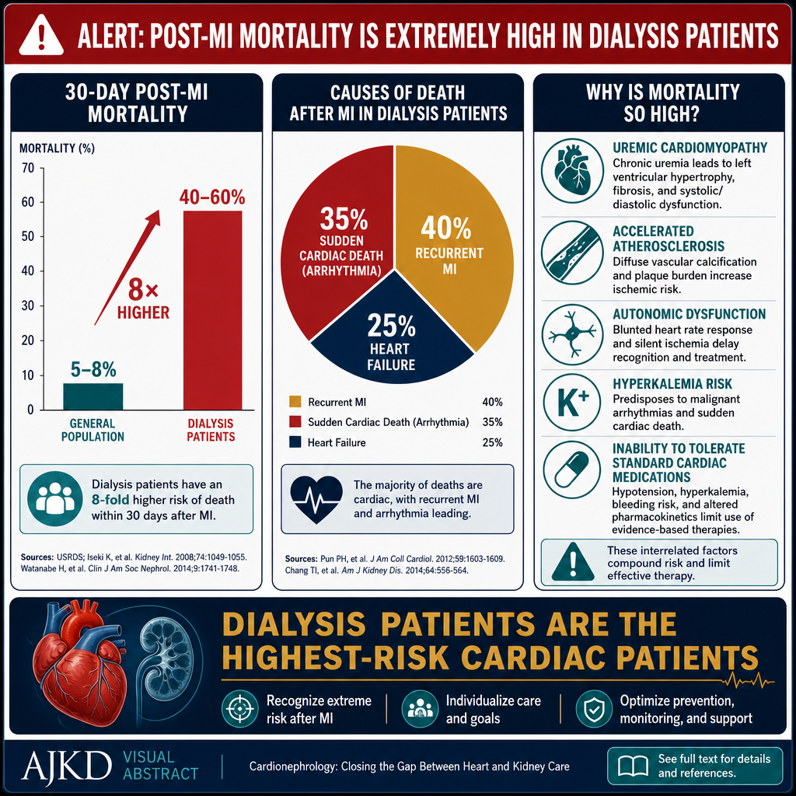
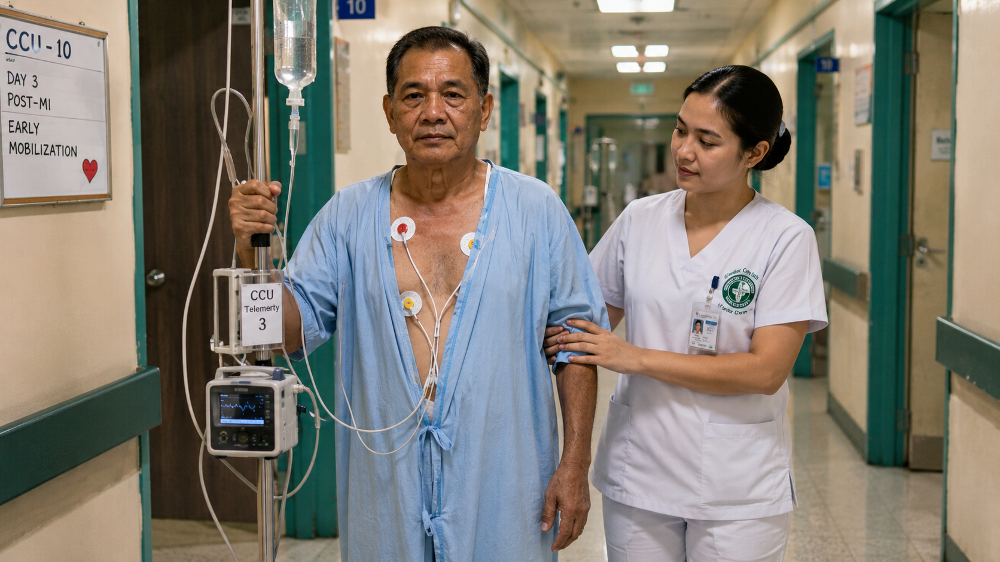
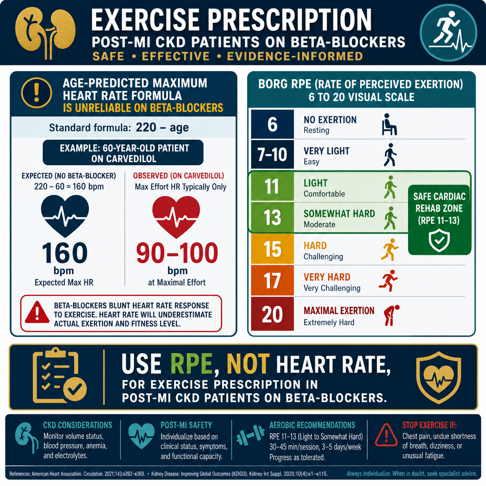
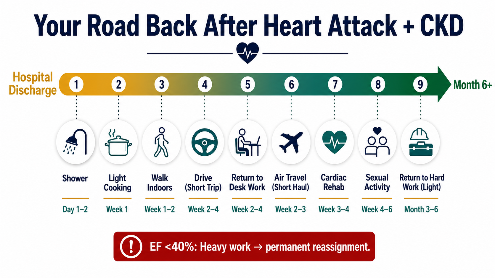
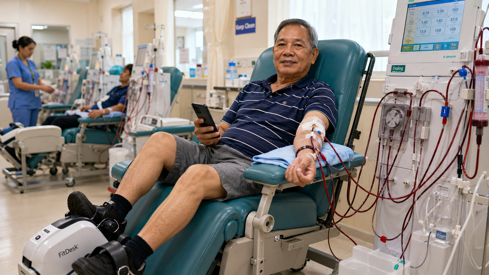

CKD and Acute MI — A High-Stakes Intersection
# CKD ampong Acute MI — Metung a Matalagâ Cumpunan Nung atin kang **Chronic Kidney Disease (CKD)**, mas mataas ya ing kekang panganib a magkasakit king **Acute Myocardial Infarction (MI)** — o ing ausan dang "heart attack." Ing dalerayan mu nung bakit: e la sasaup makapantayan ding batu mu ding chemical king katawan mu, at iti makaapektu ya king kekang pusu. ## Bakit mepeligru la ding taung atin CKD? - **Matas a blood pressure** — Iti magdulot ya pressure king batu mu ampo king pusu mu. - **Matas a cholesterol** — Malyari yang magpasara karing ugat ning daya. - **Diabetes** — Dakal a tau a atin CKD, atin la mu namang diabetes, at iti makapasakit ya karing ugat ning daya. - **Anemia** — Ing kakulangan ning daya magpagal ya king pusu mu. ## Nung atin kang heart attack ampo CKD Ing pamanyaup keka malyaring mikakatmu uling ding mapilan a gamut mekad e la masalese para karing batu mu. Ing doctor mu dapat yang maniyu: - Nung sanu la ding gamut a **ligtas** keka - Nung kailan mu kailangan ing **dialysis** - Nung malyari kang mipakontrata karing **contrast dye** para king imaging tests ## Nung nanu ing malyari mung daptan 1. Sumampa ka karing appointment mu — king **nephrologist** mu ampo king **cardiologist** mu. 2. E mu tutuknangan ing kekang gamut nung ala kang pagsabi ning doctor mu. 3. Bantayan mu ing kekang blood pressure ampo blood sugar. 4. Kumain kang masalese — kulang asin, kulang taba. 5. Itanong mu king doctor mu ing tungkul karing gamut a anti king **ACE inhibitors** o **ARBs** — ating mapilan a mipakiabala la king batu mu. --- **Tandanan mu:** Ing CKD ampong sakit king pusu misasaup la. Ing mayap a pamangalaga king metung, saupan ne ing aliwa. Makipagobra ka king kekang medical team ban ayusan la ing kekang treatment plan.
CKD at Acute MI — Isang Kritikal na Pagtatagpo
CKD ug Acute MI — Usa ka High-Stakes nga Intersection
CKD patients have 10–30× higher cardiovascular mortality than the general population. When a heart attack occurs, they face a compounded risk: the MI itself causes myocardial damage, while CKD simultaneously impairs healing, limits medication options, increases bleeding risk from antiplatelet therapy, and creates competing management priorities with dialysis. 30-day mortality after MI in dialysis patients is 40–60% — compared to 5–8% in the general population.
Ding pasyenteng atin CKD atin 10–30× mas matas a cardiovascular mortality kesa king karaniwang populasyon. Potang manyari ya ing heart attack, apapagduang ya ing risk da: ing MI mismu sasaksakan ne ing puso, habang ing CKD sabay-sabay yang makasira king pamanyaun, maglimita king opsiun king gamut, magparas king bleeding risk ibat king antiplatelet therapy, at magkakausan yang management priorities a makipasagsagan king dialysis. Ing 30-day mortality kaibat ning MI karing pasyenteng makadialysis 40–60% ya — kumpara king 5–8% karing karaniwang tau.
Ang mga pasyenteng may CKD ay may 10–30× na mas mataas na panganib ng pagkamatay dahil sa sakit sa puso kumpara sa karaniwang populasyon. Kapag nangyari ang atake sa puso, nahaharap sila sa pinagsama-samang panganib: ang MI (Myocardial Infarction — atake sa puso) mismo ay sumisira sa kalamnan ng puso, habang ang CKD naman ay nakakasagabal sa paggaling, nililimitahan ang mga pagpipilian sa gamot, pinapataas ang panganib ng pagdurugo mula sa antiplatelet therapy, at lumilikha ng mga magkakasalungat na prayoridad sa pangangasiwa kasama ang dialysis. Ang 30-araw na mortality pagkatapos ng MI sa mga pasyenteng nagda-dialysis ay 40–60% — kumpara sa 5–8% sa karaniwang populasyon.
Ang mga pasyente nga CKD adunay 10–30× mas taas nga cardiovascular mortality (kamatayon tungod sa sakit sa kasingkasing) kaysa sa kinatibuk-ang populasyon. Kung mahitabo ang atake sa kasingkasing, nag-atubang sila og compounded nga risgo: ang MI mismo nagpahinabo og myocardial damage (kadaot sa kaunoran sa kasingkasing), samtang ang CKD dungan nga nagpabag-o sa pag-ayo, naglimita sa mga opsyon sa tambal, nagdugang sa risgo sa pagdugo gikan sa antiplatelet therapy, ug nagmugna og nagkompetensya nga mga prayoridad sa pagdumala kauban ang dialysis. Ang 30-adlaw nga mortality human sa MI sa mga pasyente nga dialysis kay 40–60% — kung ikumpara sa 5–8% sa kinatibuk-ang populasyon.

The 30-day post-MI mortality rate in dialysis patients is 40–60% — roughly 8× higher than the general population. The leading causes of death are recurrent MI, sudden cardiac death from arrhythmia, and heart failure.
Ang 30-araw na mortality rate pagkatapos ng MI sa mga pasyenteng nagda-dialysis ay 40–60% — humigit-kumulang 8× na mas mataas kaysa sa karaniwang populasyon. Ang mga pangunahing sanhi ng pagkamatay ay paulit-ulit na MI, biglaang cardiac death mula sa arrhythmia (abnormal na tibok ng puso), at heart failure.
Ang 30-adlaw nga post-MI mortality rate sa mga pasyente nga dialysis kay 40–60% — mga 8× mas taas kaysa sa kinatibuk-ang populasyon. Ang nanguna nga hinungdan sa kamatayon mao ang balik-balik nga MI, kalit nga cardiac death gikan sa arrhythmia (dili regular nga tibok sa kasingkasing), ug heart failure.
CKD-specific MI challenges
Ing mga masakit a atin Chronic Kidney Disease (CKD) atin lang espesyal a mga pamakasese potang atin lang myocardial infarction (MI). Ing baso ra mas masakit gamutan uling e na sasaup masalese ing katawan da keng pamag-alis karing toxins ampong sobrang danuman. Ing kidney a e na masalese mamagobra malyari yang maging sangkan ning: - Mas matas a risgo ning pamangadugo potang gagamitan la ring blood thinners - Kasakitan king pamag-adjust karing dosis ning gamut uling e na masalese mag-filter ing baso - Mas matas a pagkakataon ning pamangasira ning puso (heart failure) - Kasakitan king pamangamit karing dang contrast dye para karing imaging tests Makanyan munaman, dakal a gamut a karaniwang gagamitan para king MI kailangan i-adjust ing dosis o maski pota e na malyaring gamitan karing masakit a atin CKD. Kabilang keni ing: - ACE inhibitors - Certain antibiotics - NSAIDs (karing painkillers) - Dang metformin Importante ing regular a pamag-monitor karing kidney function tests kabang makatanggap kayung treatment para king puso yu. Sabian yu king doktor o nurse yu nung atin kayung CKD bayu la minie nanumang balung gamut o procedure.
Mga hamong partikular sa CKD sa MI
Mga hagit sa MI espesipiko sa CKD
Troponin is chronically elevated in CKD from subclinical myocardial stress — making acute MI diagnosis harder (use serial troponin rise, not single value). Contrast dye for angiography risks contrast-induced AKI in non-dialysis CKD patients. Dialysis patients can safely receive contrast (they are dialyzable out). RAAS inhibitors must be continued but monitored for hyperkalemia. NSAIDs absolutely contraindicated.
Ang troponin ay palaging mataas sa CKD dahil sa subclinical myocardial stress — kaya mas mahirap i-diagnose ang acute MI (gumamit ng serial troponin rise, hindi iisang halaga lamang). Ang contrast dye para sa angiography ay may panganib na magdulot ng contrast-induced AKI sa mga pasyenteng CKD na hindi nagda-dialysis. Ang mga pasyenteng nagda-dialysis ay ligtas na makatanggap ng contrast (maaari itong alisin sa pamamagitan ng dialysis). Ang mga RAAS inhibitors ay dapat ipagpatuloy ngunit bantayan para sa hyperkalemia (mataas na potassium). Ang mga NSAIDs ay ganap na bawal.
Ang Troponin kanunay nga elevated sa CKD gikan sa subclinical myocardial stress — nga nagpalisod sa pag-diagnose sa acute MI (gamita ang serial troponin rise, dili single value). Ang contrast dye para sa angiography adunay risgo sa contrast-induced AKI sa mga pasyente nga CKD nga dili nag-dialysis. Ang mga pasyente nga nag-dialysis luwas nga makadawat og contrast (ma-dialyze kini pagawas). Ang RAAS inhibitors kinahanglan ipadayon pero bantayan para sa hyperkalemia (taas nga potassium). Ang NSAIDs hingpit nga kontraindikado.
Cardiac rehabilitation evidence in CKD
# Ebidensia ning Cardiac Rehabilitation keng CKD Ing cardiac rehabilitation metung yang structured program a makatulung keng pasyente a atin sakit keng pusu. Para karing tau a atin CKD (chronic kidney disease), ing exercise-based cardiac rehabilitation malyari yang makapamie prubetsu, dapot kakailangan mu pang dagdagan ing panalangin tungkul kanini. Nung atin kang CKD at sakit keng pusu, ing cardiac rehabilitation malyaring: - Tulung mampasalese ing kekang exercise tolerance - Maging masalese ing kekang quality of life - Dinan kang aralan tungkul keng pamangalaga king kekang katawan Makananu man, deng pasyente a atin advanced CKD o ding atiu na keng dialysis, karakal pang gagawan a research ba rang abalu nung makananu ya kaepektibu ing cardiac rehabilitation. Nung balu mu pang maigi, makipagsabi ka keng kekang doktor nung ing cardiac rehabilitation makatulung keka, lalu na nung atin kang CKD. Ing kekang healthcare team malyari dang i-adjust ing program base keng kekang kidney function at anuman pang condition a atin ka.
Ebidensya ng cardiac rehabilitation sa CKD
Ebidensya sa cardiac rehabilitation sa CKD
Formal cardiac rehabilitation (CR) reduces recurrent MI by 25% and all-cause mortality by 20–30% in the general population. Despite underrepresentation in trials, CKD patients benefit equally — yet CR referral rates in CKD are only 30–40% of the general population rate. Every CKD patient surviving an acute MI should be actively referred to and enrolled in a structured cardiac rehabilitation program.
Ang pormal na cardiac rehabilitation (CR) ay nagpapababa ng paulit-ulit na MI ng 25% at lahat ng sanhi ng pagkamatay ng 20–30% sa karaniwang populasyon. Sa kabila ng kakulangan ng representasyon sa mga pag-aaral, ang mga pasyenteng may CKD ay parehong nakikinabang — ngunit ang rate ng CR referral sa CKD ay 30–40% lamang ng rate sa karaniwang populasyon. Bawat pasyenteng may CKD na nakaligtas sa acute MI ay dapat na aktibong i-refer at i-enroll sa isang structured cardiac rehabilitation program.
Ang pormal nga cardiac rehabilitation (CR) nagpamenos sa balik-balik nga MI og 25% ug all-cause mortality og 20–30% sa kinatibuk-ang populasyon. Bisan sa kakulang sa representasyon sa mga trials, ang mga pasyente nga CKD pareho ang benepisyo — pero ang CR referral rates sa CKD kay 30–40% lang sa rate sa kinatibuk-ang populasyon. Ang matag pasyente nga CKD nga nakabuhi sa acute MI kinahanglan aktibo nga i-refer ug i-enroll sa structured cardiac rehabilitation program.
Acute MI Management — CKD-Specific Considerations
Pamaniapat king Acute MI — Mayaliling Konsiderasyon para kareng atin CKD Ing acute myocardial infarction (MI) o "heart attack" kailangan yang mabilis a pamaniapat. Nung atin kang chronic kidney disease (CKD), atin muring karakal a bagya a dapat isipan ning doktor mu. **Bakit makapalyaring maiba ing pamaniapat mu:** Ing bato mu e na sasala mayap ing daya, inya maaring maapektuhan ing paralan ning katawan mu king pamag-obra ning gamut. Atin gamut a maaring mas makasira pa king bato mu, at atin mu namang maaring kailanganin yang mas ditak o mas dakal a dosis. **Kareng gamut:** - Ing aspirin at clopidogrel gagamitan ya pa rin, oneng ing doktor mu maki-ingat ya king dosing lalu na nung ika atin anticoagulants na. - Ing heparin o enoxaparin maaring kailangan yang i-adjust ing dosis base king kidney function mu (creatinine clearance). - Kareng ACE inhibitors at ARBs, maaring simulan deng ditak-ditak at bantayan da reng mayap ing bato mu. - Kareng beta-blockers at statins, keraklan safe la kareng atin CKD. **Kareng procedure:** Nung kailangan mung mag-angiography o PCI, ing contrast dye maaring makasira pa king bato mu. Ing doktor mu magsikuang yang paralan ban protektahan ing bato mu — antimo ing pamag-inum mung dakal a fluids bayu at kaibat ning procedure, o gagamitan deng special contrast a ditak ing epekto na king bato. **Ing mahalaga:** Sabian mu king doktor mu ing lahat tungkul king kalagayan ning bato mu. E ka tatakut a maki-tanong nung atin kang e mu maintindian. Ing mabuting komunikasyon kayabe ning healthcare team mu makatulong ban tanggapan mu ing pinakamayap a pamaniapat.
Pamamahala ng Acute MI — Mga Konsiderasyong Partikular sa CKD
Acute MI Management — Mga Konsiderasyon Espesipiko sa CKD
| Intervention | General Population | CKD / Dialysis Modification |
|---|---|---|
| Reperfusion (PCI) | Primary PCI within 90 min for STEMI | Same — do not delay PCI for CKD. Dialysis patients: contrast is safe (dialyzable). Non-dialysis CKD Stage 3–4: N-acetylcysteine + IV hydration pre-procedure; avoid high-osmolar contrast. |
| Aspirin | 325 mg loading → 75–100 mg daily | Same dose. Bleeding risk is higher in CKD (uremic platelet dysfunction) — monitor for GI bleeding closely. PPI co-prescription strongly recommended. |
| P2Y12 inhibitor (clopidogrel/ticagrelor) | Dual antiplatelet for 12 months post-ACS | Clopidogrel preferred over ticagrelor in dialysis (ticagrelor can cause dyspnea; less data). Prasugrel contraindicated if eGFR <60 (increased bleeding). Dual antiplatelet duration may be shortened to 6 months in high bleeding-risk CKD patients. |
| ACE inhibitor / ARB | Start within 24 hrs if EF reduced | Start at lowest dose, monitor K+ and creatinine closely. Hold if K+ >5.5 mEq/L. Dialysis patients: ACE/ARB for cardiorenal protection regardless of eGFR. |
| Beta-blocker | Metoprolol or carvedilol — start within 24 hrs | Same — CKD patients benefit as much as general population. Carvedilol preferred for CKD due to additional alpha-blocking (antihypertensive effect). Start low — atenolol accumulates in CKD (use metoprolol or carvedilol instead). |
| Statin | High-intensity statin immediately | Rosuvastatin 10–20 mg (renally safe — hepatically cleared). Atorvastatin 40–80 mg equally effective. Target LDL <55 mg/dL (ACC/AHA 2026 very high-risk). Do NOT withhold statins in CKD post-MI. |
| Heparin / anticoagulation | UFH during PCI | UFH preferred over LMWH in Stage 4–5 CKD (LMWH accumulates). Dialysis: UFH standard. Bivalirudin if HIT history. Monitor anti-Xa if LMWH used in non-dialysis CKD. |
| Fluid management | IV fluids as needed | Restrict fluid aggressively in oliguric/anuric patients. Pulmonary edema risk is very high. Consider early HD/CRRT for fluid removal if pulmonary congestion develops post-MI in CKD. |
Phase I — In-Hospital Cardiac Rehabilitation
## Phase I — Rehabilitasiong Cardiac Kilub ning Ospital Ing Phase I ning rehabilitasiong cardiac magsimula kabang atyu ka pa king ospital kayari ning cardiac event mu o surgery. Ing layunin na niti ya ing tulungan kang makapag-umpisa maging active pasibayu king ligtas a paralan. ### Nanu ing Asahan Mu Kabang atyu ka king ospital, ing cardiac rehabilitation team dalawin da ka ba rang i-assess ing kondisyon mu. Tutulungan da kang mag-umpisa karing malulung exercise antimo ing: - Pamaglakad karing malapit a distansya - Pamag-stretching exercises kabang makabili o makatikdo - Pamag-breathing exercises ### Bakit Mahalaga Ya Iti Ing malulung pamag-galaw kayari ning cardiac event o surgery makatulung king: - Pamag-prevent karing blood clots - Pamag-maintain ning muscle strength - Pamag-improve ning circulation mu - Pamag-prepare keka para king recovery king bale ### Importanting Pangilala Sabian mu agad king healthcare team mu nung mararasan mu ing ninuman kareting: - Sakit king debdeb o pressure - Kapigilan ning hininga - Karelat a sobra-sobra - Kabiran o pamag-lightheaded - Irregular a heartbeat ### Bayu Ka Mako King Ospital Bayu ka mag-discharge, ing team mu ipakasabi da keka ing tungkul king: - Gamut a kailangan mung inuman - Mga activity restrictions - Keng kapilan ka makabalik king Phase II outpatient rehabilitation - Pamag-schedule ning follow-up appointments
Phase I — In-Hospital Cardiac Rehabilitation
Phase I — In-Hospital Cardiac Rehabilitation
Stabilization, Education, and Gentle Mobilization
Pamagpatatag, Pamangulang, at Malumanay a Pamag-galaw Ing mipakasanting a puntu na ning kekang acute low back pain—ing masakit a pamagkulisak o pamagtarak—kawiliwili yang mawala kilub ning pilan a aldo angga pilan a simana. Lalapo iting panaun a kailangan mung agawan ing sarili mu, alang e na dapat mung igobluk itang likud mu uling maka-stress ka o maka-apura ka. Ating mapilan a importante mung balu: **Ing bie ya ing kekang kakaluguran.** Alang dapat a mag-stay ka kilub bed potang egana-gana na ing sakit. Kailangan mung gumalaw-galaw nang malumanay—maglakad-lakad ka king bale, o magpapairal-airal ka king silu. Bayu mu pasibayu deng kekang karaniwang dapat a gagawan, gawan mu ngan nung makananu mu na arisiklatan. **E mu dapat patinuan a magtakut.** Maski masakit ya itang likud mu, e na rugu mangabaldugan a maragul a depektu king kekang buntuk. King karaklan deng kasu, ing acute low back pain mechanical pain ya—mangabaldugan king deng muscles, ligaments, o joints ya ing makasause. Mag-improve ya iti antis mu pa abalu. **Deng pain relievers malyari lang makasaup.** Nung recommend na ning doctor mu, ing paracetamol o deng NSAIDs (anti-inflammatory drugs) malyari lang kumawang king sakit ampon king pamamaga. Tukian mu ing tamang dosis a sinabi na ning kekang doctor. **Magpatuntun ka pasibayu king normal a galaw.** Antis mung gawan deng kasanayan mu, gawan mu mu pa ngan. Nung mabayat a dapat ing obra mu, magtepat ka pa keng aldo o dakal pang aldo bayu ka magbalik king kekang karaniwang routine.
Stabilization, Edukasyon, at Dahan-dahang Paggalaw
Stabilization, Edukasyon, ug Hinay nga Mobilization
Goals: Prevent deconditioning, reduce anxiety, begin patient education, identify and manage CKD-specific complications (arrhythmia, fluid overload, electrolytes), coordinate with dialysis team.
Mga Layunin: Pigilan ang deconditioning (pagpapahina ng katawan dahil sa kawalan ng aktibidad), bawasan ang pagkabalisa, simulan ang edukasyon ng pasyente, tukuyin at pangasiwaan ang mga komplikasyong partikular sa CKD (arrhythmia, labis na likido, electrolytes), makipag-ugnayan sa dialysis team.
Mga Tumong: Pugngan ang deconditioning, minos-an ang kabalaka, sugdan ang edukasyon sa pasyente, ilhan ug dumahon ang mga komplikasyon espesipiko sa CKD (arrhythmia, fluid overload, electrolytes), koordinasyon sa dialysis team.
- Day 1–2: Complete bed rest. Passive range of motion only. Deep breathing exercises (diaphragmatic, 4–6 cycles hourly). Ankle pumps to prevent DVT.
- Aldo 1–2: Kailangan mong makarelaks king kama. Passive range of motion mu kabang. Exercises king pamaglanguk (diaphragmatic, 4–6 cycles balang oras). Ankle pumps ban e ka matanam DVT.
- Araw 1–2: Kumpletong bed rest. Passive range of motion lamang. Mga ehersisyo sa malalim na paghinga (diaphragmatic, 4–6 na siklo bawat oras). Ankle pumps para maiwasan ang DVT (pamumuo ng dugo sa ugat).
- Adlaw 1–2: Kompleto nga bed rest. Passive range of motion lang. Mga ehersisyo sa lawom nga pagginhawa (diaphragmatic, 4–6 ka cycles matag oras). Ankle pumps para mapugngan ang DVT.
- Day 2–3: Dangle legs at bedside. Sit in chair 15–30 minutes twice daily. Walk to bathroom with assistance. Monitor BP and HR with every position change.
- Araw 2–3: Ibitin ang mga binti sa gilid ng kama. Umupo sa silya ng 15–30 minuto dalawang beses araw-araw. Maglakad papunta sa banyo na may tulong. Bantayan ang BP at HR sa bawat pagbabago ng posisyon.
- Adlaw 2–3: Bitay-bitay ang mga tiil sa kilid sa higdaanan. Lingkod sa silya 15–30 minutos kaduha adlaw-adlaw. Lakaw ngadto sa banyo nga may tabang. Bantayi ang BP ug HR sa matag pagbag-o og posisyon.
- Day 3–4: Short walks in room (30–50 meters). Seated exercises — arm circles, marching in place. Climbing 1 flight stairs as discharge test.
- Araw 3–4: Maikling paglalakad sa kwarto (30–50 metro). Mga ehersisyong nakaupo — pag-ikot ng braso, pag-march sa kinatatayuan. Pag-akyat ng 1 palapag ng hagdan bilang discharge test.
- Adlaw 3–4: Mubo nga paglakaw sa kwarto (30–50 metros). Seated exercises — arm circles, marching in place. Pag-saka og 1 flight sa hagdan isip discharge test.
- Day 4–5: Walk 100–200 meters with monitoring. Educate on medication adherence, activity restrictions, warning signs, and Phase II enrollment.
- Araw 4–5: Maglakad ng 100–200 metro na may pagmamanman. Turuan tungkol sa tamang pag-inom ng gamot, mga paghihigpit sa aktibidad, mga babala, at pag-enroll sa Phase II.
- Adlaw 4–5: Lakaw og 100–200 metros nga may monitoring. Tudloi bahin sa medication adherence, mga restriksyon sa kalihokan, mga warning signs, ug pag-enroll sa Phase II.
- Dialysis coordination: Avoid HD within 24 hours of PCI. When resuming HD: reduce UFR to ≤8 mL/kg/hr, use cooling dialysate (36°C), avoid large K+ swings, continuous cardiac monitoring during first post-MI HD sessions.
- Koordinasyon sa dialysis: Iwasan ang HD (Hemodialysis) sa loob ng 24 oras pagkatapos ng PCI. Kapag ipinagpatuloy ang HD: bawasan ang UFR sa ≤8 mL/kg/hr, gumamit ng cooling dialysate (36°C), iwasan ang malalaking pagbabago sa K+, tuloy-tuloy na cardiac monitoring sa mga unang post-MI HD sessions.
- Koordinasyon sa dialysis: Likayi ang HD sulod sa 24 oras human sa PCI. Kung ipadayon ang HD: minos-i ang UFR ngadto sa ≤8 mL/kg/hr, gamita ang cooling dialysate (36°C), likayi ang dagko nga K+ swings, padayon nga cardiac monitoring sa unang mga post-MI HD sessions.
Contraindications to Phase I exercise — do not mobilize if:
Mga rason para e ra magawa ing Phase I exercise — e ye pasibukan magalaw ing pasyenti nung:
Mga Contraindication sa Phase I exercise — huwag magpagalaw kung:
Mga kontraindikasyon sa Phase I exercise — ayaw i-mobilize kung:
- Resting HR >120 bpm or <50 bpm
- Resting HR >120 bpm o <50 bpm
- Resting HR na >120 bpm o <50 bpm
- Resting HR >120 bpm o <50 bpm
- Systolic BP >180 mmHg or <90 mmHg at rest
- Systolic BP na >180 mmHg o <90 mmHg habang nagpapahinga
- Systolic BP >180 mmHg o <90 mmHg sa pagpahulay
- New or worsening chest pain in the past 8 hours
- Bago o lumalalang pananakit ng dibdib sa nakalipas na 8 oras
- Bag-o o nagkagrabeng sakit sa dughan sa miaging 8 oras
- Active pulmonary edema or O₂ saturation <90% on room air
- Aktibong pulmonary edema o O₂ saturation na <90% sa room air
- Aktibo nga pulmonary edema o O₂ saturation <90% sa room air
- New significant arrhythmia (AF with RVR, VT) not yet controlled
- Bagong malubhang arrhythmia (AF with RVR, VT) na hindi pa kontrolado
- Bag-o nga significante nga arrhythmia (AF with RVR, VT) nga wala pa nakontrol
- Fever >38°C (rule out CRBSI if catheter present)
- Lagnat na >38°C (suriin kung may CRBSI kung may catheter)
- Hilanat >38°C (i-rule out ang CRBSI kung adunay catheter)
- Serum K+ <3.0 or >6.0 mEq/L — correct first
- Serum K+ na <3.0 o >6.0 mEq/L — itama muna
- Serum K+ <3.0 o >6.0 mEq/L — ayohon una

Phase II — Early Outpatient Recovery
## Phase II — Maranun a Pamag-recover Keng Lual ning Ospital Ing phase a iti maumpisa potang makalual na kayu king ospital at magpapatuloy anggang makapag-follow-up na kayu keng doktor yu. Kening panaun a iti, ing katawan yu mag-umpisa nang mag-heal, oneng kailangan yu pang mag-ingat. ### Nung Nanu ing Dapat Yung Asahan - Maralas makaramdam kayung mapagal o mayna - Malyari kayung atin ditak a sakit o pamamanas keng lugal ning operasyon - Ing gana yung mangan malyaring ali pa masanting - Malyari kayung maging emotional o masakit ing ulo ### Gamut Inuman yu ing lahat a gamut a binie na ning doktor yu. Nung atin kayung pain medication, inuman ye anting makasulat keng reseta. E yu tutuknangan ing pamag-inum king gamut a ala pang arap-arap keng doktor yu. ### Pamangalaga king Sugat Panatilinan yung malinis at tuyu ing sugat yu. E yu pabasan king danum angga king e na sasabian ning doktor yu. Nung menakit kayung pamula, pamamanas, o ating lumual a nanasa, tawagan yu agad ing doktor yu. ### Karelanan at Pamangan - Mangan kayung ditak-ditak oneng maralas - Inom kayung dakal a danum - E kayu kumain king mabayat a pamangan angga king ali na sasabian ning doktor yu ### Nung Kapilan Dapat Tawagan ing Doktor Tawagan yu ing doktor yu nung: - Atin kayung lagnat king ibat 38°C - Ing sakit magsusubi at e na mabawasan ning gamut - Atin kayung hirap maninawa - Ing sugat yu mamula, mamamanas, o atin lumual a nanasa
Phase II — Maagang Pagpapagaling Bilang Outpatient
Phase II — Unang Panahon sa Pag-ayo Didto sa Gawas
Progressive Walking Program and Lifestyle Modification
**Programa ning Paglakad a Pabaling-baling at Pamag-alilan king Paralan ning Kabiayan** Ing paglakad metung ya kareng pikamaayung exercise para king kekatamung katawan. Makatulung ya king pamangaskas ning pusu, pamababa ning blood pressure, at pamagpababa ning timbang. Ining programa agamitan na ka ban makapag-umpisa kang maglakad regular at gawan meng mas masalese ing kegang paralan ning kabiayan. **Bayu Ka Mag-umpisa** Makipagsalita ka muna king kekang doctor bayu mu simulan iting programa, lalu na nung atin kang sakit king pusu, diabetes, o aliwa pang kondisyun king kalusugan. Manyali kang sapatus a kumportable at kayagpang maglakad. Minum kang danum bayu, kabang, at kaibat ning exercise. **Paralan ning Paglakad** *Minggu 1-2:* Maglakad ka 10-15 minutes balang aldo, tatlung beses king metung a simana. Maglakad kang marahan-dahan mu. *Minggu 3-4:* Dagdagan me ing oras mu. Maglakad ka 20-25 minutes, atlung beses king metung a simana. Pabilis-bilis me na ing lakad mu. *Minggu 5-8:* Maglakad ka 30 minutes o mas makapal pa, limang beses king metung a simana. Dapat maririnlas ka at mapasdan mung mabilis ing kutut ning pusu mu. **Pamag-alilan king Paralan ning Kabiayan** Maliari ka muring gawan ding aliwang bageng iti ban mas lulusug ka: - Mangan kang prutas, gule, at pagkang atin fiber - Babasan me ing asin at taba king kekang pamangan - Itda me ing pamanigarilyu nung manigarilyu ka - Babasan me ing pag-inum ning alak - Matudtud kang 7-8 oras balang bengi - Kontrolan me ing kekang stress **Kailangan Mung Tumawag king Kekang Doctor Nung:** - Masakit ing kekang dagul kabang maglakad ka - Maramdaman mung mabigat ing kekang salu o atin sakit - Mangawut ka o kasakitan kang maglakad - Masakit ing kekang buntuk o mangulisulisuan ka Tandanan mu: Ing importante, maglakad kang regular, e mu kailangan maglakad mabilis agad-agad. Pabaylan-baylan me ing kekang katawan at e ka magmadali.
Paisa-isang Pagpapalawak ng Programa sa Paglalakad at Pagbabago ng Pamumuhay
Programa sa Paglakaw nga Nagkadako ug Pag-usab sa Kinabuhi
Goals: Build walking tolerance from 5–10 minutes to 20–30 minutes, establish medication adherence, begin dietary changes, identify depression (very common post-MI in CKD), and prepare for formal Phase III cardiac rehab.
Mga Layunin: Palakasin ang kakayahang maglakad mula 5–10 minuto hanggang 20–30 minuto, tiyaking nainom ang mga gamot sa tamang oras, simulan ang pagbabago ng pagkain, alamin kung may depression o matinding kalungkutan (karaniwang nangyayari pagkatapos ng MI sa mga may CKD), at maghanda para sa pormal na Phase III cardiac rehab.
Mga Tumong: Padak-on ang kakayahan sa paglakaw gikan sa 5–10 minutos ngadto sa 20–30 minutos, seguradohon ang husto nga pag-inom sa tambal, sugdan ang pag-usab sa pagkaon, ilhon ang depression o kasubo (kasagaran kaayo pagkahuman sa MI sa mga tawo nga may CKD), ug mag-andam para sa pormal nga Phase III cardiac rehab.
- Week 1: Walk 5–10 minutes twice daily at slow pace. Rest for 5 minutes between walks. Do not carry anything heavier than 2–3 kg. No driving. No stairs except as necessary. Rest if any chest discomfort, dizziness, or shortness of breath.
- Semana 1: Lumakad kang 5–10 minutos, adua beses balang aldo, malumanay ya ing lakad mu. Magpaynawa kang 5 minutos kilub ning balang paglakad. E ka magdalang mabyat a mélakwas king 2–3 kg. E ka mámanehu. E ka magsakiat liban nung kailangan talaga. Magpaynawa ka nung atin kang maramdaman a sakit king salu mu, kariling buntuk, o kasakitan king pamagsinga.
- Week 1: Maglakad ng 5–10 minuto, dalawang beses sa isang araw sa mabagal na bilis. Magpahinga ng 5 minuto sa pagitan ng mga paglalakad. Huwag magbuhat ng anumang bagay na mas mabigat sa 2–3 kg. Bawal magmaneho. Bawal umakyat ng hagdan maliban kung kinakailangan. Magpahinga kung may anumang kirot sa dibdib, nahihilo, o hirap huminga.
- Semana 1: Maglakaw og 5–10 minutos kaduha matag adlaw sa hinay nga lakang. Magpahulay og 5 minutos taliwala sa mga lakaw. Ayaw pagdala og mas bug-at sa 2–3 kg. Ayaw pagmaneho. Ayaw pagsaka og hagdan gawas kung kinahanglan gyud. Magpahulay kung adunay kasakit sa dughan, kalipong, o kakapoy sa pagginhawa.
- Week 2: Increase to 10–15 minutes per walk, twice daily. Can begin light household activities (cooking, light cleaning). Avoid anything causing breath-holding or straining (Valsalva — raises BP acutely).
- Week 2: Dagdagan sa 10–15 minuto bawat paglalakad, dalawang beses sa isang araw. Maaari nang magsimula ng magagaang gawaing bahay (pagluluto, magaang paglilinis). Iwasan ang anumang gawain na kailangang pigilan ang paghinga o pagpuwersa ng katawan (Valsalva — biglaang nagtataas ng BP).
- Semana 2: Dugangan ngadto sa 10–15 minutos matag lakaw, kaduha matag adlaw. Mahimo na ang gaan nga buluhaton sa balay (pagluto, gaan nga paglimpyo). Likayi ang bisan unsa nga makapugong sa imong ginhawa o makapahago pag-ayo (Valsalva — makapataas kini sa BP sa kalit).
- Week 3: 15–20 minutes continuous walking once daily at comfortable pace (RPE 3–4). Light stretching program. May begin some social activities. Resume sexual activity only after clearance from cardiologist (typically 4–6 weeks post-STEMI).
- Week 3: 15–20 minuto na tuloy-tuloy na paglalakad isang beses sa isang araw sa komportableng bilis (RPE 3–4). Magaang pag-uunat. Maaari nang magsimula ng ilang gawaing panlipunan. Maari lang makipagtalik matapos makahingi ng pahintulot mula sa cardiologist (karaniwang 4–6 na linggo matapos ang STEMI).
- Semana 3: 15–20 minutos nga walay hunong nga paglakaw kausa matag adlaw sa komportable nga lakang (RPE 3–4). Gaan nga programa sa pag-stretch. Mahimo na ang pipila ka kalihokan uban sa uban nga tawo. Mahimo lang mobalik sa sexual activity pagkahuman og pagtugot sa cardiologist (kasagaran 4–6 ka semana pagkahuman sa STEMI).
- HD patients: Walking on non-HD days. Do not exercise within 2 hours of HD. Post-HD rest of 1 hour before any activity. Monitor for IDH-related dizziness and fatigue — reduce walking on HD days.
- Mga pasyenteng nagda-dialysis (HD): Maglakad sa mga araw na walang HD. Huwag mag-ehersisyo sa loob ng 2 oras pagkatapos ng HD. Magpahinga ng 1 oras pagkatapos ng HD bago gumawa ng anumang aktibidad. Bantayan ang pagkahilo at pagkahapo na dulot ng IDH (pagbaba ng presyon habang nagda-dialysis) — bawasan ang paglalakad sa mga araw ng HD.
- Mga pasyente sa HD: Maglakaw sa mga adlaw nga walay HD. Ayaw pag-ehersisyo sulod sa 2 oras pagkahuman sa HD. Magpahulay og 1 oras pagkahuman sa HD ayha mag-ehersisyo. Bantayi ang kalipong ug kakapoy tungod sa IDH — gamaya ang paglakaw sa mga adlaw sa HD.
- Monitoring: Home BP twice daily. HR before and after walks. Weight daily (fluid monitoring). Record any symptoms during exercise in a diary to share at clinic visit.
- Pagmamanman: Magpa-check ng BP sa bahay dalawang beses sa isang araw. HR bago at pagkatapos maglakad. Timbang araw-araw (para sa pagsubaybay ng tubig sa katawan). Itala ang anumang sintomas habang nag-eehersisyo sa isang diary upang maipakita sa susunod na checkup.
- Pag-monitor: Home BP kaduha matag adlaw. HR ayha ug pagkahuman sa paglakaw. Timbang matag adlaw (para sa pag-monitor sa tubig sa lawas). Isulat ang bisan unsang sintomas panahon sa ehersisyo sa diary aron ipakita sa clinic visit.
Depression after MI in CKD — screen at every visit
Ing depresyon kaibat ning ataki king pusu keng aduang sakit king batu — mag-screen balang bisita
Depression pagkatapos ng MI sa mga may CKD — suriin sa bawat checkup
Depression pagkahuman sa MI sa CKD — i-check matag bisita
Major depression affects 20–30% of post-MI patients and up to 40% of dialysis patients. The combination is devastating for adherence, medication compliance, and survival. Screen with the PHQ-9 at every outpatient visit for 3 months post-MI. Cardiac rehabilitation itself is one of the most effective antidepressants — physical activity, social interaction, and goal-setting reduce depression scores by 30–40%. For pharmacotherapy: SSRIs (sertraline, escitalopram) are safe in CKD. Avoid TCAs (QTc prolongation + anticholinergic effects). Adjust doses for eGFR.
Ang matinding depression ay umaapekto sa 20–30% ng mga pasyenteng kakapagdaan lang ng MI at hanggang 40% ng mga pasyenteng nagda-dialysis. Ang kombinasyong ito ay nakapipinsala sa pagsunod sa mga tagubilin, pag-inom ng gamot, at sa pangkalahatang kalusugan. Gamitin ang PHQ-9 sa bawat checkup bilang outpatient sa loob ng 3 buwan matapos ang MI. Ang cardiac rehabilitation mismo ay isa sa mga pinaka-epektibong lunas sa depression — ang pisikal na aktibidad, pakikisalamuha, at pagtatakda ng mga layunin ay nagpapababa ng depression scores ng 30–40%. Para sa gamutan: ang SSRIs (sertraline, escitalopram) ay ligtas sa CKD. Iwasan ang TCAs (dahil sa QTc prolongation at anticholinergic effects). Ayusin ang dosis batay sa eGFR.
Ang major depression makaapekto sa 20–30% sa mga pasyente pagkahuman sa MI ug hangtod 40% sa mga dialysis patients. Ang kombinasyon niini grabe kaayo ang epekto sa pagsunod sa tambal ug sa kinabuhi. I-screen gamit ang PHQ-9 matag outpatient visit sulod sa 3 ka bulan pagkahuman sa MI. Ang cardiac rehabilitation mismo usa sa labing epektibo nga kontra sa depression — ang pisikal nga kalihokan, pakig-uban sa uban, ug pagbutang og tumong makapaubos sa depression scores og 30–40%. Para sa tambal: ang SSRIs (sertraline, escitalopram) luwas sa CKD. Likayi ang TCAs (QTc prolongation + anticholinergic effects). I-adjust ang dosis base sa eGFR.
Phase III — Supervised Exercise Cardiac Rehabilitation
Yugtu III — Supervised Exercise Cardiac Rehabilitation Ing Cardiac Rehabilitation metung yang programa a sasandalan na ka king pamag-exercise a mekaalung king pusu mu. King yugtu a ini, gagawan mu ing exercise a makabye sasakitan da ka o supervised da ka ning mga healthcare providers. Ing mituran a ini susulung king karelang pusu, papaiguan na ing kondisyon ning katawan mu, at sasaup a mibalik ka king normal mung pamibiye-biye aldo-aldo. **Nanu ing dapat mung asahan:** - Mag-e-exercise ka atlung beses (3x) balang Linggu, manga 30 hanggang 60 minutos balang session - Sasakitan da ka ning mga nurse at therapist kabang mag-e-exercise ka - I-monitor da ing heart rate mu, blood pressure, at ECG kabang mag-e-exercise ka - Ing exercise a gawan mu e masyadu masakit — dapat makayarap ka pang magsalita kabang gagawan mu **Nung makaramdam kang:*** - Sakit king salu o dibdib (chest pain) - Kawalan ning hininga a e normal - Kalugmukan o pagkamarul - Mabilis a tibok ning pusu a e ka komportable **Tumunda ka king exercise at sabyan mung agad ing staff.** Ing layon na ning program a ini iyang tumulung keka a maging masigla kang pasibayu king ligtas a paralan. Makiramdam ka king katawan mu at sunuran mu ing kautusan da ring healthcare providers mu.
Phase III — Supervised Exercise Cardiac Rehabilitation o Ehersisyong may Pangangasiwa
Phase III — Supervised Exercise Cardiac Rehabilitation nga Giyahan
Structured, Monitored Exercise with ECG Telemetry
Estrukturadung Ehersisyu a Maka-monitor kayabe ning ECG Telemetry Ining programa ning ehersisyu gagawan da kang tulung a mag-ehersisyu kang ligtas kabang maka-monitor la king pusu mu gamit ing ECG telemetry. Ining equipment makapagbasa ya king electrical activity ning pusu mu in real time, inya mabilis dang apansin nung atin mang problema. **Nanu ing dapat mung asahan:** Kabang mag-e-ehersisyu ka, ikabit da ring staff ding malating patches a ausan dang electrodes king dibdib mu. Deting patches makakonekta la king monitor a magpakit king ritmo ning pusu mu. Ing healthcare team mu bantayan da ing pusu mu kabang mag-e-ehersisyu ka king treadmill, stationary bike, o aliwang equipment. **Bakit importante ini:** Ing maka-monitor a ehersisyu makatulung ya king doktor mu a akit nung makananu ya reresponde ing pusu mu king physical activity. Makatulung ya ini para: - Maka-alam nung ligtas ya ing level ning ehersisyu para keka - Makapansin problemang pusu a papakit mu kabang active ka - Makagawa planu para king cardiac rehabilitation mu **Nung nanu ing dapat mung gawan bayu ka datang:** - Maglakad kang comfortable a sapatus at loose a imalan - E ka manyaman mabayat bayu ing session mu - Kanan mu ing regular mung gamut maliban nung sinabi ning doktor mu a e mu kanan - Sabian mu king staff nung makaramdam kang kasakitan king dibdib, kawalan ning inawa, o dizziness kabang mag-e-ehersisyu ka
Nakabalangkas at Minomonitor na Ehersisyo na may ECG Telemetry (tuloy-tuloy na pagbabantay ng tibok ng puso)
Striktado ug Gibantayan nga Ehersisyo uban sa ECG Telemetry
Goals: Improve cardiopulmonary fitness (VO₂ max), reduce resting HR and BP, improve lipid profile, reduce depression, educate on risk factor modification, return to work and normal activity.
Mga Layunin: Pagbutihin ang lakas ng puso at baga (VO₂ max), babaan ang HR at BP habang nagpapahinga, pagbutihin ang antas ng kolesterol, bawasan ang depression, turuan tungkol sa pagbabago ng mga panganib na salik, at bumalik sa trabaho at normal na gawain.
Mga Tumong: Pauswagon ang fitness sa kasingkasing ug baga (VO₂ max), paubsan ang resting HR ug BP, pauswagon ang lipid profile, paubsan ang depression, tudloan bahin sa pag-usab sa mga risk factors, mobalik sa trabaho ug normal nga kalihokan.
- Warm-up (10 min): Slow walking, light stretching, breathing exercises — identical to CKD exercise guide Phase 1–2.
- Pamainit-init (10 min): Maralang paglakad, malutu a pamaninat, ampong ehersiyo king pamangisna — parehu mu rin keng CKD exercise guide Phase 1–2.
- Pag-iinit o warm-up (10 min): Mabagal na paglalakad, magaang pag-uunat, ehersisyong paghinga — katulad ng CKD exercise guide Phase 1–2.
- Pag-init (10 min): Hinay nga paglakaw, gaan nga pag-stretch, mga ehersisyo sa pagginhawa — pareha sa CKD exercise guide Phase 1–2.
- Aerobic training (20–30 min): Walking, stationary cycling, or elliptical at RPE 3–5 (40–60% heart rate reserve). In CKD, use the Borg RPE scale — heart rate targets may be unreliable if on beta-blockers (HR is blunted). Target: able to speak in sentences, mildly breathless.
- Aerobic training (20–30 min): Paglalakad, pagbibisikleta sa stationary bike, o elliptical sa RPE 3–5 (40–60% heart rate reserve). Sa CKD, gamitin ang Borg RPE scale — maaaring hindi tumpak ang target na heart rate kung umiinom ng beta-blockers (humihina ang HR response). Target: kayang magsalita ng pangungusap, bahagyang hingal.
- Aerobic training (20–30 min): Paglakaw, stationary cycling, o elliptical sa RPE 3–5 (40–60% heart rate reserve). Sa CKD, gamita ang Borg RPE scale — ang heart rate targets dili masaligan kung nag-inom og beta-blockers (ang HR dili kaayo motaas). Target: makasulti ka og mga sentence, gamay lang ang hangos.
- Resistance training (15 min): Light resistance bands or weights × 2 per week. Exhale on exertion — never hold breath. Avoid fistula arm for upper limb exercises with weights.
- Resistance training (15 min): Magaang resistance bands o weights × 2 beses bawat linggo. Huminga palabas kapag nagpupuwersa — huwag kailanman pigilan ang hininga. Iwasan ang braso na may fistula (daanan ng dugo para sa dialysis) kapag gumagamit ng weights.
- Resistance training (15 min): Gaan nga resistance bands o weights × 2 ka beses matag semana. Ginhawa pagawas kung magpahago — ayaw gyud pugngi ang ginhawa. Likayi ang bukton nga may fistula para sa upper limb exercises gamit ang weights.
- Cool-down (10 min): Slow walking, full-body stretching, relaxation breathing.
- Paglamig o cool-down (10 min): Mabagal na paglalakad, buong-katawang pag-uunat, ehersisyong pang-relax sa paghinga.
- Pagpahulay (10 min): Hinay nga paglakaw, pag-stretch sa tibuok lawas, relaxation breathing.
- HD patients specifically: Schedule CR sessions on non-HD days whenever possible. If unavoidable on HD day, conduct CR session at least 3 hours after HD completion. Intradialytic cycling (pedaling during HD) is an excellent adjunct — ask your dialysis center if available.
- Partikular para sa mga pasyenteng nagda-dialysis (HD): Mag-iskedyul ng CR sessions sa mga araw na walang HD kung posible. Kung hindi maiiwasan na sa araw ng HD, isagawa ang CR session nang hindi bababa sa 3 oras matapos ang HD. Ang intradialytic cycling (pagpepadyak habang nagda-dialysis) ay isang mahusay na pandagdag — itanong sa inyong dialysis center kung available ito.
- Para gyud sa mga HD patients: I-schedule ang CR sessions sa mga adlaw nga walay HD kung mahimo. Kung dili malikayan sa adlaw sa HD, buhata ang CR session labing menos 3 oras pagkahuman sa HD. Ang intradialytic cycling (pagpedal panahon sa HD) maayo kaayo nga dugang — pangutan-a ang imong dialysis center kung available.
- CKD-specific monitoring during each session: BP and HR pre-exercise, every 15 minutes during, and 15 minutes post-exercise. Continuous ECG telemetry for first 12 sessions minimum. Weight before and after (fluid management). Glucose if diabetic.
- Pagmamanman na partikular sa CKD sa bawat session: BP at HR bago mag-ehersisyo, bawat 15 minuto habang nag-eehersisyo, at 15 minuto pagkatapos. Tuloy-tuloy na ECG telemetry para sa unang 12 sessions minimum. Timbang bago at pagkatapos (pamamahala ng tubig sa katawan). Asukal sa dugo kung diabetic.
- Pag-monitor nga espesipiko sa CKD matag session: BP ug HR ayha mag-ehersisyo, matag 15 minutos panahon, ug 15 minutos pagkahuman. Continuous ECG telemetry para sa unang 12 ka sessions labing menos. Timbang ayha ug pagkahuman (fluid management). Glucose kung diabetic.

Beta-blockers blunt the heart rate response to exercise — a patient on carvedilol may only reach 90–100 bpm at maximal effort. Target HR zones based on age are therefore unreliable. The RPE (Rate of Perceived Exertion) scale is the gold standard for exercise prescription in post-MI CKD patients on beta-blockers.
Ang beta-blockers ay humihina sa pagtugon ng heart rate sa ehersisyo — ang isang pasyenteng umiinom ng carvedilol ay maaaring umabot lamang ng 90–100 bpm sa pinakamataas na pagsisikap. Samakatuwid, ang target na HR zones batay sa edad ay hindi mapagkakatiwalaan. Ang RPE (Rate of Perceived Exertion) scale o sukat ng nadaramang pagsisikap ang pinakatumpak na paraan ng pagrereseta ng ehersisyo sa mga post-MI CKD patients na umiinom ng beta-blockers.
Ang beta-blockers makapuypoy sa heart rate response sa ehersisyo — ang pasyente nga nag-inom og carvedilol basin makaabot lang og 90–100 bpm sa pinakadako nga paghago. Busa, ang target HR zones base sa edad dili kasaligan. Ang RPE (Rate of Perceived Exertion) scale mao ang gold standard para sa exercise prescription sa mga post-MI CKD patients nga nag-inom og beta-blockers.
Phase IV — Long-Term Maintenance
## Phase IV — Long-Term Maintenance Ining phase ya ing para keng pangmaluatang pamamasiag. Kaybat mung meyari la ding mumunang phase ning treatment mu, manakit na ka keng doktor mu para king regular check-up. Ing karelanan na niti para masiguradung manatiling estable ing kondisyon mu at agad-agad a ma-detect ing maski sanu mang problema. Kailangan mung ituloy ing pamangan keng prescribed medications mu anggang e na ka binirian order ning doktor mu. E mu itigil o baguian ing dose na ning gamut mu king sarili mung desisyon. Magbalik ka keng doktor mu para king follow-up appointments potang: - Balang 3 months king mumunang banua - Balang 6 months kaybat na nita, nung estable ne ing kondisyon mu Agkat mu agad ing doktor mu nung maranasan mu ing maski sanu karening: - Pamagbalik da ring sintomas mu - Bayung sintomas - Side effects ibat keng gamut mu - Maski nanu mang e mu maintindian tungkul keng kalusugan mu Importante ya ing pamangan keng masalese at balanced a pamangan, regular a exercise, at sapat a tuknang. Aligtasan mu ing paninigarilyu at pamag-inom alak. Tandaan mu: Ing regular a komunikasyon keng healthcare team mu importante para king marakeng banua a malulusug a pamibiye.
Phase IV — Pangmatagalang Pagpapanatili
Phase IV — Long-Term Maintenance
Lifelong Physical Activity and Risk Factor Control
Ing Panghabambuhay a Pisikal a Aktibidad at Pamangontrol king Risk Factors Ing regular a pisikal a aktibidad metung ya kareng pikamaimpurtanting bageng agagawa mu para king kalusugan ning pusu mu. Ing exercise makatulong king pamangontrol king blood pressure, cholesterol, at blood sugar levels. Makatulong ya murin king pamangalang king mayap a timbang at pamababa king stress. Mag-aim kang mag-exercise antimong 30 minutos balang aldo, 5 aldo balang linggु. Malyari mung ipunan isadya kareng malating sesyon, antimo ing 10 minutos atlung besis king metung aldo. Ing paglakad, paglanguy, o pamag-bike mayap lang pamilian. Bagu ka magumpisa ning bayung exercise program, makipagsalita ka king doktor mu, lalung-lalu na nung atin kang sakit king pusu o aliwa pang health conditions. Maimpurtanti mu ring kontrolan la reng aliwa pang risk factors: - Tuknang na king pamanyisigarilyु - Panatilinan me ing mayap a blood pressure (mas baba king 120/80 mmHg) - Panatilinan me ing cholesterol levels king target range mu - Kontrolan me ing blood sugar nung atin kang diabetes - Panatilinan me ing mayap a timbang Ing pamangontrol kareting risk factors kasalukuyan king medication, mayap a pamangan, at regular a check-ups king doktor mu. Sigi kang makipagsalita king healthcare team mu tungkul king progreso mu at magpatuloy kang sumunud king treatment plan mu.
Panghabambuhay na Pisikal na Aktibidad at Pagkontrol ng mga Panganib na Salik
Kinabuhi-hangtod nga Pisikal nga Kalihokan ug Pagkontrol sa Risk Factors
Goals: Maintain cardiopulmonary fitness gains, sustain medication adherence, manage all cardiovascular risk factors, prevent recurrent MI, and integrate exercise into HD schedule.
Mga Layunin: Panatilihin ang mga nakamit sa lakas ng puso at baga, ipagpatuloy ang tamang pag-inom ng gamot, pamahalaan ang lahat ng cardiovascular risk factors, maiwasan ang muling pagkakaroon ng MI, at isama ang ehersisyo sa iskedyul ng HD.
Mga Tumong: Tipigan ang mga na-angkon nga fitness sa kasingkasing ug baga, padayonon ang husto nga pag-inom sa tambal, kontrolon ang tanang cardiovascular risk factors, pugngan ang balik-balik nga MI, ug isumpay ang ehersisyo sa HD schedule.
- 150 minutes per week moderate-intensity walking or cycling (30 min × 5 days, or any equivalent combination)
- 150 minutes balang semana a moderate-intensity pamanlakad o pamangabayo king bisikleta (30 min × 5 aldo, o nanumang equivalent combination)
- 150 minuto bawat linggo na katamtamang-intensity na paglalakad o pagbibisikleta (30 min × 5 araw, o anumang katumbas na kombinasyon)
- 150 minutos matag semana nga moderate-intensity nga paglakaw o pagbisikleta (30 min × 5 ka adlaw, o bisan unsang pareha nga kombinasyon)
- Resistance exercises 2× per week — resistance bands, light weights, or water bottles
- Resistance exercises 2× bawat linggo — resistance bands, magaang weights, o mga bote ng tubig
- Resistance exercises 2× matag semana — resistance bands, gaan nga weights, o mga botelya nga may tubig
- Annual review by both cardiologist and nephrologist — echocardiogram, stress test if symptoms recur
- Taunang pagsusuri ng parehong cardiologist at nephrologist — echocardiogram, stress test kung bumalik ang mga sintomas
- Tinuig nga pagtan-aw sa cardiologist ug nephrologist — echocardiogram, stress test kung mobalik ang mga sintomas
- Intradialytic cycling during HD sessions — ask your dialysis center
- Intradialytic cycling habang nasa HD sessions — magtanong sa inyong dialysis center
- Intradialytic cycling (pagbisikleta samtang nag-HD) atol sa mga HD session — pangutan-a ang imong dialysis center
- Continue all cardiac medications indefinitely — never stop aspirin, statin, beta-blocker, or ACE/ARB without physician guidance
- Ipagpatuloy ang lahat ng gamot sa puso nang walang hanggan — huwag kailanman ihinto ang aspirin, statin, beta-blocker, o ACE/ARB nang walang gabay ng doktor
- Ipadayon ang tanang cardiac medications hangtod sa hangtod — ayaw gayod hunonga ang aspirin, statin, beta-blocker, o ACE/ARB kung walay giya sa doktor
- Quarterly labs: lipids, HbA1c, eGFR, electrolytes, Hgb — adjust therapy based on results
- Quarterly labs: lipids, HbA1c, eGFR, electrolytes, Hgb — i-adjust ang therapy batay sa mga resulta
- Matag tulo ka bulan nga lab tests: lipids, HbA1c, eGFR, electrolytes, Hgb — i-adjust ang therapy base sa resulta
Smoking After a Heart Attack — Why You Must Stop Now
Ing Pamamangarilyu Kaibat ning Heart Attack — Bakit Dapat Kang Tumigil Agad
Paninigarilyo Pagkatapos ng Heart Attack — Bakit Kailangang Tumigil Na Agad
Pagpanigarilyo Human sa Heart Attack — Ngano Kinahanglan Mohunong Ka Dayon
Smoking is the single most modifiable risk factor after a heart attack. Quitting reduces the risk of recurrent MI by 50% within 1 year — more than any single medication. In CKD patients, smoking accelerates kidney disease progression, worsens hypertension, and reduces the effectiveness of all cardiac medications. There is no "safe" amount of smoking after MI in a CKD patient.
Ing pamamangarilyu ing pikamalyaring mabago a risk factor kaybat ning heart attack. Ing pamahumpay niti mamababa ya ing panganib ning paulit-ulit na MI ng 50% kilub ning 1 taon — mas malagwe pa kesa king maski anong metung a gamut. Karing pasyenteng atin CKD, ing pamamangarilyu papabilis ya king pamangasira ning batu, papalalanin ya ing hypertension, at papababa ya ing epektu ning lahat a cardiac medications.
Ang paninigarilyo ang pinakamalaking mababagong panganib pagkatapos ng heart attack. Ang pagtitgil nito ay nagpapababa ng panganib ng paulit-ulit na MI ng 50% sa loob ng 1 taon — higit pa sa kahit anong iisang gamot. Sa mga pasyenteng may CKD, ang paninigarilyo ay nagpapabilis sa pagkasira ng bato, nagpapalala ng high blood pressure, at nagpapababa ng bisa ng lahat ng cardiac medications. Walang "ligtas" na dami ng paninigarilyo pagkatapos ng MI sa isang pasyenteng may CKD.
Ang pagpanigarilyo ang usa nga labing mababag-o nga risk factor pagkahuman sa heart attack. Ang paghunong makapamenos sa risgo sa balik-balik nga MI og 50% sulod sa 1 ka tuig — labaw pa sa bisan unsang usa ka tambal. Sa mga pasyente nga CKD, ang pagpanigarilyo nagpabilis sa pagkadaot sa kidney, nagpagrabe sa hypertension, ug nagpaminus sa epekto sa tanang cardiac medications. Walay "luwas" nga dami sa pagpanigarilyo pagkahuman sa MI sa usa ka pasyente nga CKD.
Why smoking is uniquely dangerous in CKD post-MI
Bakit mapanganib ing pamamangarilyu karing CKD post-MI
Bakit mapanganib ang paninigarilyo sa CKD post-MI
Ngano peligroso ang pagpanigarilyo sa CKD post-MI
Nicotine causes coronary vasospasm — directly triggering plaque rupture and recurrent MI. In CKD it also: reduces renal blood flow, worsening already-impaired autoregulation; raises blood pressure by 10–20 mmHg acutely; accelerates proteinuria and GFR decline; and reduces the antiplatelet effectiveness of clopidogrel. Smokers with CKD progress to ESKD 3× faster than non-smokers. Each cigarette after MI elevates 24-hour arrhythmia risk.
Ing nicotine magkakausan ya coronary vasospasm — diretsuang makapagpalitan king plaque at paulit-ulit a MI. Karing pasyenteng atin CKD, papababa ya karin ing dalus ning daya papuntang batu, magpapataas ya king pressure ning daya nang 10–20 mmHg, papabilis ya karin ing proteinuria at pagbaba ning GFR, at papababa ya king epektu ning clopidogrel. Ing mga manigarilyu a atin CKD papabilis la papuntang ESKD 3× mas malagwe kaysa karing e manigarilyu.
Ang nicotine ay nagdudulot ng coronary vasospasm — direktang nagpapalitaw ng pagputok ng plaque at paulit-ulit na MI. Sa CKD nagpapababa rin ito ng daloy ng dugo sa bato, nagtatanggal ng 10–20 mmHg sa blood pressure, nagpapabilis ng proteinuria at pagbaba ng GFR, at nagpapababa ng antiplatelet effectiveness ng clopidogrel. Ang mga nanigarilyo na may CKD ay nagtataguyod ng ESKD nang 3× mas mabilis kaysa sa mga hindi nanigarilyo.
Ang nicotine nagpahinabo og coronary vasospasm — direktang nagpatunhay sa plaque rupture ug balik-balik nga MI. Sa CKD nagpakunhod usab kini sa blood flow ngadto sa kidney; nagpataas sa BP og 10–20 mmHg sa kalit; nagpadali sa proteinuria ug pagkaminus sa GFR; ug nagpaminos sa antiplatelet effectiveness sa clopidogrel. Ang mga nagpanigarilyo nga adunay CKD nagpabilis ngadto sa ESKD 3× mas paspas kaysa sa dili nagpanigarilyo.
Safe cessation options in CKD
Ligtas a paralan ning pamahumpay karing CKD
Ligtas na paraan ng pagtitgil sa CKD
Luwas nga mga paagi sa paghunong sa CKD
Nicotine Replacement Therapy (NRT): Patches (step-down: 21 mg → 14 mg → 7 mg over 8–10 weeks), gum (2 mg or 4 mg), lozenges — no dose adjustment needed in any CKD stage, safe during dialysis sessions. Varenicline (Champix): Most effective pharmacotherapy — halves failure rates vs NRT alone. Reduce to 0.5 mg once daily (not 1 mg BID) if eGFR <30. Bupropion: Avoid in CKD Stage 4–5 — seizure risk from drug accumulation. Behavioral support: Brief physician counseling doubles quit rates — always combine with pharmacotherapy.
Nicotine Replacement Therapy (NRT): Patches (step-down: 21 mg → 14 mg → 7 mg kilub ning 8–10 simana), gum, lozenges — e kailangan i-adjust king dose karing CKD, ligtas kabang magda-dialysis. Varenicline (Champix): pikaepektibung pharmacotherapy — reduce to 0.5 mg once daily nung eGFR <30. Bupropion: agpailag karing CKD Stage 4–5. Behavioral support: makipagsalita king doktor mu para i-double ing quit rate mu.
Nicotine Replacement Therapy (NRT): Mga patches (step-down: 21 mg → 14 mg → 7 mg sa loob ng 8–10 linggo), gum (2 mg o 4 mg), lozenges — hindi kailangan ng dose adjustment sa anumang CKD stage, ligtas sa dialysis. Varenicline (Champix): Pinaka-epektibong pharmacotherapy — nagpapahati ng failure rates kumpara sa NRT lang. Bawasan sa 0.5 mg isang beses sa isang araw kung eGFR <30. Bupropion: Iwasan sa CKD Stage 4–5 — panganib ng seizure. Behavioral support: Ang maikling counseling ng doktor ay nagdoble ng quit rates — palaging pagsamahin sa pharmacotherapy.
Nicotine Replacement Therapy (NRT): Mga patches (step-down: 21 mg → 14 mg → 7 mg sulod sa 8–10 ka semana), gum (2 mg o 4 mg), lozenges — walay gikinahanglan nga dose adjustment sa bisan unsang CKD stage, luwas sa dialysis. Varenicline (Champix): Labing epektibo nga pharmacotherapy — gikatunga ang failure rates vs NRT lang. I-reduce ngadto sa 0.5 mg kausa sa usa ka adlaw kung eGFR <30. Bupropion: Likayi sa CKD Stage 4–5 — risgo sa seizure. Behavioral support: Ang mubo nga physician counseling nagduha-duha sa quit rates — kanunay isabay sa pharmacotherapy.
The 72-hour craving peak — how to survive it
Ing 72-oras a peak ning pagkaibigan — makananu mung talunin iti
Ang 72-oras na peak ng craving — paano ito harapin
Ang 72-oras nga peak sa craving — unsaon pagbuhi niini
Nicotine cravings peak at 48–72 hours after the last cigarette, then progressively decrease. After 2 weeks, most physical withdrawal symptoms resolve. Strategies for CKD patients: drink water or unsweetened juice when craving strikes (hydration protects kidneys too); walk for 5 minutes (the craving passes); call a family member; chew sugar-free gum; practice deep breathing for 60 seconds. Avoid alcohol after MI — it is a major craving trigger and independently raises blood pressure and arrhythmia risk in CKD patients.
Ing pagkanasa sigarilyu pinakamatas ya king 48–72 oras kaybat ning mekapalwang sigarilyu at mamiminus ya kaibat. Kaibat ning 2 simana, karakal kareng physical withdrawal symptoms mawawala na. Mga paralan: inum ka danum nung mapanasan ka; maglakad kang 5 minutos; tawagan mu ing metung a myembro ning pamilya mu; ngumuya ka sugar-free gum; manasnasa kang malalim king 60 segundos. Agpailag king alak kaybat ning MI — iti maralas a trigger ning craving at magpapataas ya king presyon ning daya at arrhythmia risk.
Ang pagnanais ng sigarilyo ay pinakamalakas sa 48–72 oras pagkatapos ng huling sigarilyo at unti-unting bumababa pagkatapos. Pagkalipas ng 2 linggo, karamihan sa mga pisikal na sintomas ng withdrawal ay nawala na. Mga estratehiya para sa mga pasyenteng may CKD: uminom ng tubig o unsweetened juice kapag may craving (ang hydration ay nagpoprotekta rin sa bato); maglakad ng 5 minuto; tumawag sa isang miyembro ng pamilya; ngumunguya ng sugar-free gum; malalim na paghinga sa loob ng 60 segundo. Iwasan ang alkohol pagkatapos ng MI — ito ay pangunahing nagpapalakas ng craving at nagpapataas ng blood pressure at arrhythmia risk sa mga pasyenteng may CKD.
Ang mga craving sa sigarilyo pinaka-kusog sa 48–72 oras pagkahuman sa katapusang sigarilyo ug unti-unti dayon nga mobaba. Human sa 2 ka semana, kadaghanan sa mga pisikal nga sintomas sa withdrawal mohunong na. Mga estratehiya: pag-inom og tubig o unsweetened juice kung adunay craving; maglakaw og 5 minutos; tawagi ang usa ka miyembro sa pamilya; nguya og sugar-free gum; lawom nga pagginhawa sulod sa 60 segundos. Likayi ang alkohol pagkahuman sa MI — usa kini ka mayor nga nagpapalakas og craving ug nagpaataas sa blood pressure ug risgo sa arrhythmia sa mga pasyente nga CKD.

E-cigarettes and vapes are NOT safe alternatives — especially in CKD post-MI
E-cigarettes at vapes e la ligtas a alternatibo — lalu na karing CKD post-MI
Ang e-cigarettes at vapes ay HINDI ligtas na alternatibo — lalo na sa CKD post-MI
Ang e-cigarettes ug vapes DILI luwas nga alternatibo — ilabi na sa CKD post-MI
Vaping delivers nicotine — the same vasoconstrictor that triggers coronary vasospasm and reduces renal blood flow. Vape aerosols contain propylene glycol, heavy metals (nickel, tin), and ultrafine particles that directly injure endothelium. No clinical trial has demonstrated cardiovascular safety of vaping post-MI. iQOS (heated tobacco) also delivers nicotine and combustion byproducts — it is not a cessation tool. The only proven safe substitute for cigarettes in a post-MI CKD patient is not smoking at all, supported by medically supervised cessation pharmacotherapy (NRT or varenicline).
Ing vaping magbibigay ya nicotine — ang parehung vasoconstrictor na magpapalitaw king coronary vasospasm at papababa king dalus ning daya papuntang batu. E la ligtas ang e-cigarettes at vapes — e la cessation tools. Ing iQOS magbibigay mu ya nicotine at combustion byproducts. Ing tangi a ligtas a paralan ya ing e na manigarilyu at gamitan ing NRT o varenicline a sinabi ning doktor mu.
Ang vaping ay nagbibigay ng nicotine — ang parehong vasoconstrictor na nagpapalitaw ng coronary vasospasm at nagpapababa ng daloy ng dugo sa bato. Naglalaman ang vape aerosols ng propylene glycol, mabibigat na metal (nickel, tin), at ultrafine particles na direktang nakapipinsala sa endothelium. Walang clinical trial na nagpakita ng cardiovascular safety ng vaping pagkatapos ng MI. Ang iQOS (heated tobacco) ay nagbibigay din ng nicotine at mga combustion byproducts — hindi ito cessation tool. Ang tanging pinakaligtas na kapalit ng sigarilyo sa isang post-MI CKD patient ay ang hindi paninigarilyo, na sinusuportahan ng medikal na cessation pharmacotherapy (NRT o varenicline).
Ang vaping naghatod og nicotine — ang parehas nga vasoconstrictor nga nagpapukaw og coronary vasospasm ug nagpakunhod sa blood flow ngadto sa kidney. Ang vape aerosols adunay propylene glycol, bug-at nga mga metal (nickel, tin), ug ultrafine particles nga direktang nagpahinabo og kadaot sa endothelium. Walay clinical trial nga nagpakita sa cardiovascular safety sa vaping pagkahuman sa MI. Ang iQOS naghatod usab og nicotine ug combustion byproducts — dili kini cessation tool. Ang bugtong pinakaligtas nga kapuli sa sigarilyo sa usa ka post-MI CKD patient mao ang walay pagpanigarilyo, gisuportahan sa medikal nga cessation pharmacotherapy (NRT o varenicline).
Returning to Daily Life After MI in CKD — What's Safe and When
Pamanibalik king Pangangabuyan Kaibat ning MI king CKD — Nanu ing Ligtas at Kailan
Pagbabalik sa Araw-araw na Pamumuhay Pagkatapos ng MI sa CKD — Ano ang Ligtas at Kailan
Pagbalik sa Adlaw-adlaw nga Kinabuhi Human sa MI sa CKD — Unsa ang Luwas ug Kanus-a
Recovery after a heart attack in a CKD patient is not just medical — it is a return to real life. Most patients are discharged within 3–5 days and feel overwhelmed about what they can and cannot do. This section gives clear, evidence-based timelines for driving, work, sexual activity, travel, and exercise. When in doubt, always ask your cardiologist and nephrologist before resuming any activity.
Ing pamag-recover kaybat ning heart attack karing pasyenteng atin CKD e ya medical mu — iti ya muring pamanibalik king tunay a kabiyasnan. Karakal a pasyente mipalwal la king ospital kilub ning 3–5 aldo at makaramdam la ning kalabiran tungkul king nanu la malyari at e malyari. Ining seksyun magbibigay ya malinaw a timeline para king pamag-manehu, trabahu, sekswal a aktibidad, pamag-byahe, at ehersisyu. Nung atin kang e mu masiguro, lagi mung itanong king cardiologist at nephrologist mu bayu mu ituluy ang maski anong aktibidad.
Ang pagbawi pagkatapos ng heart attack sa isang pasyenteng may CKD ay hindi lamang medikal — ito ay isang pagbabalik sa tunay na buhay. Karamihan sa mga pasyente ay nililabasan ng ospital sa loob ng 3–5 araw at nararamdamang overwhelmed tungkol sa kung ano ang magagawa at hindi. Ang seksyong ito ay nagbibigay ng malinaw, evidence-based na timeline para sa pagmamaneho, trabaho, sekswal na aktibidad, paglalakbay, at ehersisyo. Kapag may pagdududa, laging tanungin ang iyong cardiologist at nephrologist bago ipagpatuloy ang anumang aktibidad.
Ang pagkaayo pagkahuman sa heart attack sa usa ka pasyente nga CKD dili lang medikal — usa kini ka pagbalik sa tinuod nga kinabuhi. Ang kadaghanan sa mga pasyente gi-discharge sulod sa 3–5 ka adlaw ug nakasinati og pagkabug-atan bahin sa kung unsa ang mahimo ug dili. Kini nga seksyon naghatod og klaro, ebidensya-base nga mga timeline para sa pagmamaneho, trabaho, sekswal nga kalihokan, pagbiyahe, ug ehersisyo. Kung adunay pagduhaduha, kanunay pangutan-a ang imong cardiologist ug nephrologist sa dili pa ipadayon ang bisan unsang kalihokan.

Driving — when is it safe?
Pamag-manehu — kailan ya ligtas?
Pagmamaneho — kailan ito ligtas?
Pagmamaneho — kanus-a kini luwas?
Uncomplicated MI with PCI, stable EF: 2–4 weeks. STEMI with reduced EF (<35%): Minimum 4 weeks, cardiologist clearance required. With ICD implanted post-MI: Minimum 3–6 months (local LTFRB regulations apply for commercial vehicles). With ongoing angina or arrhythmia: Do not drive until controlled. Commercial drivers: Stricter rules — minimum 3 months symptom-free, stress test required before license renewal. Never drive if you experience chest pain, palpitations, or dizziness.
Uncomplicated MI + PCI, stable EF: 2–4 simana. STEMI + reduced EF (<35%): Minimum 4 simana, kailangan clearance ning cardiologist. Nung atin kang ICD: Minimum 3–6 bulan. Nung atin kang ongoing angina o arrhythmia: E ka mámanehu anggang makontrol ya. Commercial drivers: Minimum 3 bulan alang sintomas + stress test. E ka mámanehu nung makaramdam kang chest pain, palpitations, o dizziness.
Walang komplikasyong MI na may PCI, stable EF: 2–4 linggo. STEMI na may reduced EF (<35%): Minimum 4 linggo, kailangan ng clearance ng cardiologist. Na-implant ng ICD pagkatapos ng MI: Minimum 3–6 buwan. May patuloy na angina o arrhythmia: Huwag magmaneho hanggang makontrol. Mga propesyonal na driver: Minimum 3 buwan na walang sintomas, kailangan ng stress test. Huwag kailanman magmaneho kung nakakaranas ng pananakit ng dibdib, palpitations, o pagkahilo.
Walay komplikasyon nga MI uban sa PCI, stable EF: 2–4 ka semana. STEMI nga adunay reduced EF (<35%): Minimum 4 ka semana, gikinahanglan ang clearance sa cardiologist. Naka-implant og ICD pagkahuman sa MI: Minimum 3–6 ka bulan. Adunay padayon nga angina o arrhythmia: Ayaw pagmaneho hangtod makontrol. Propesyonal nga mga drayber: Minimum 3 ka bulan nga walay sintomas, kikinahanglan og stress test.
Return to work — how long to wait
Pamanibalik king trabahu — ngana yang panaun a hintayan
Pagbabalik sa trabaho — gaano katagal ang hintay
Pagbalik sa trabaho — pila ang huwaton
Sedentary / office work (teacher, manager, desk job): 2–4 weeks if emotionally stable. Light physical work (sales, light assembly): 4–6 weeks. Moderate physical work (nursing, healthcare): 6–8 weeks with physician clearance. Heavy manual labor (construction, farming): 3–6 months, or permanent reassignment if EF <40% — discuss with cardiologist. In the Philippines, SSS disability and sickness benefits may apply for extended recovery leave — ask your social worker. Dialysis patients: HD schedule must be protected — discuss accommodation with employer.
Sedentary/opisina (guro, manager): 2–4 simana. Magaang pisikal a trabahu: 4–6 simana. Moderate: 6–8 simana. Mabayat a trabahu (konstruksyun, pagsasaka): 3–6 bulan o permanenteng pagpalipat nung EF <40%. Sa Pilipinas, malyari mung mag-apply SSS sickness/disability benefits. Karing pasyenteng nagda-dialysis: protektahan mu ing schedule ning HD mu at kausapin mu ing employer mu.
Sedentary / opisina (guro, manager, desk job): 2–4 linggo. Magaang pisikal na trabaho: 4–6 linggo. Katamtamang pisikal na trabaho (nars, healthcare): 6–8 linggo na may clearance ng doktor. Mabibigat na trabaho (konstruksyon, pagsasaka): 3–6 buwan, o permanenteng paglipat kung EF <40%. Sa Pilipinas, maaaring mag-apply ng SSS sickness/disability benefits. Mga pasyenteng nagda-dialysis: Ang schedule ng HD ay dapat pangalagaan — makipag-usap sa employer.
Sedentary / opisina: 2–4 ka semana. Gaan nga pisikal nga trabaho: 4–6 ka semana. Moderate nga pisikal nga trabaho: 6–8 ka semana uban sa clearance sa doktor. Bug-at nga trabaho sa kamot: 3–6 ka bulan, o permanenteng paglipat kung EF <40%. Sa Pilipinas, mahimong mag-apply og SSS sickness/disability benefits. Mga pasyente sa dialysis: Ang HD schedule kinahanglan pag-akomodasyon — hisguti sa employer.
Sexual activity — the honest guide
Sekswal a aktibidad — ing tapat a gabay
Sekswal na aktibidad — ang tapat na gabay
Sekswal nga kalihokan — ang tapat nga giya
Most cardiologists clear sexual activity when the patient can climb 1–2 flights of stairs without symptoms — equivalent energy to sexual intercourse. This typically occurs 4–6 weeks after an uncomplicated STEMI and 2–3 weeks after a small NSTEMI with preserved EF. Recommended: Begin with a less physically active role. Avoid immediately after eating, alcohol, or extreme temperatures. Stop and rest if chest pain or palpitations occur. CKD note: Avoid sexual activity on the same day as dialysis — post-HD fatigue and hemodynamic instability persist for hours. Phosphodiesterase-5 inhibitors (sildenafil/Viagra, tadalafil/Cialis) are ABSOLUTELY CONTRAINDICATED within 24–48 hours of any nitrate (isosorbide, nitroglycerin) — the combination can cause fatal hypotension. Disclose all medications to your cardiologist.
Karakal a cardiologist papayagan la ing sekswal a aktibidad nung makakasakiat ne ing pasyente king 1–2 na palapag ning hagdan alang sintomas — katumbas na enerhiya king sekswal na intercourse. Iti karaniwang mangyari 4–6 simana kaybat ning uncomplicated STEMI. Inirekomenda: Magsimula king mas e masyadu pisikal a aktibung papel. Agpailag king kaagad kaybat mangan, inum alak, o extremong init/lamig. Tigil at mapaynawa nung atin kang chest pain o palpitations. Para karing CKD: e kang mamisekswal king parehung aldo ning dialysis mu. Sildenafil/Viagra at tadalafil/Cialis GANAP NA BAWAL kilub ning 24–48 oras ning maski anong nitrate — fatal ang kombinasyon.
Karamihan sa mga cardiologist ay pinapayagan ang sekswal na aktibidad kapag ang pasyente ay kayang umakyat ng 1–2 palapag ng hagdan nang walang sintomas. Nangyayari ito karaniwang 4–6 linggo pagkatapos ng walang komplikasyong STEMI. Inirerekomenda: Magsimula sa hindi masyadong aktibong papel. Iwasan kaagad pagkatapos kumain, uminom ng alak, o sa sobrang init o lamig. Tumigil at magpahinga kung may pananakit ng dibdib o palpitations. Para sa CKD: Iwasan ang sekswal na aktibidad sa parehong araw ng dialysis. Ang mga PDE5 inhibitors (sildenafil/Viagra, tadalafil/Cialis) ay GANAP NA IPINAGBABAWAL sa loob ng 24–48 oras ng anumang nitrate — ang kombinasyon ay maaaring magdulot ng nakamamatay na pagbaba ng presyon.
Ang kadaghanan sa mga cardiologist nagtugotan sa sekswal nga kalihokan kung ang pasyente makatawid og 1–2 ka flight sa hagdan nga walay sintomas. Kasagaran mahitabo kini 4–6 ka semana pagkahuman sa walay komplikasyon nga STEMI. Girekomenda: Sugdan sa dili kaayo aktibo nga papel. Likayi human sa pagkaon, alkohol, o sobrang init/kabugnaw. Hunong ug pahulay kung adunay sakit sa dughan o palpitations. Para sa CKD: Likayi ang sekswal nga kalihokan sa parehong adlaw sa dialysis. Ang PDE5 inhibitors (sildenafil/Viagra, tadalafil/Cialis) HINGPIT NGA KONTRAINDIKADO sulod sa 24–48 oras sa bisan unsang nitrate — ang kombinasyon mahimong makamatay.
Air travel and long-distance trips after MI in CKD
Pamag-byahe at pamag-lupad kaybat ning MI karing CKD
Paglipad at mahabang biyahe pagkatapos ng MI sa CKD
Paglupad ug hataas nga pagbiyahe pagkahuman sa MI sa CKD
Domestic air travel: Avoid for at least 2–3 weeks after uncomplicated MI, 4–6 weeks after STEMI. Cabin pressure at altitude reduces oxygen availability — may provoke ischemia. International travel: Minimum 4–6 weeks post-STEMI; 8+ weeks if EF <40%. Always carry: complete medication list, recent ECG (within 1 month), physician letter, and 2-week supply of all medications in carry-on luggage. Dialysis patients abroad: Arrange HD at the destination center BEFORE departure — requires at least 4–6 weeks advance planning and recent hepatitis/HIV serology. Never skip a dialysis session for any travel reason — the hyperkalemia and fluid overload risk are too high post-MI.
Domestic flight: Agpailag king 2–3 simana kaybat ning uncomplicated MI, 4–6 simana kaybat ning STEMI. International: Minimum 4–6 simana kaybat ning STEMI; 8+ simana nung EF <40%. Lagi kang magdala ning medication list, kamakailang ECG, sulat ning doktor, at 2-simana a supply ning gamut mu king carry-on. Karing pasyenteng nagda-dialysis: I-arrange mu ing HD sa destination BAYU ka maglakbay — kailangan 4–6 simana a advance planning. E mu kailanman prubahan ing metung a session ning dialysis para sa maski anong dahilan.
Domestic na paglipad: Iwasan ng hindi bababa sa 2–3 linggo pagkatapos ng walang komplikasyong MI, 4–6 linggo pagkatapos ng STEMI. International na paglalakbay: Minimum 4–6 linggo pagkatapos ng STEMI; 8+ linggo kung EF <40%. Laging magdala ng: kumpletong listahan ng gamot, kamakailang ECG, liham ng doktor, at 2-linggong supply ng gamot sa carry-on. Mga pasyenteng nagda-dialysis na maglalakbay sa ibang bansa: I-ayos ang HD sa destinasyong sentro BAGO umalis — nangangailangan ng 4–6 linggong advance planning at kamakailang hepatitis/HIV serology. Huwag kailanman laktawan ang isang dialysis session para sa anumang dahilan sa paglalakbay.
Domestic nga paglupad: Likayi sulod sa 2–3 ka semana pagkahuman sa walay komplikasyon nga MI, 4–6 ka semana pagkahuman sa STEMI. International nga pagbiyahe: Minimum 4–6 ka semana pagkahuman sa STEMI; 8+ ka semana kung EF <40%. Kanunay magdala og: kompleto nga listahan sa tambal, bag-o nga ECG, sulat sa doktor, ug 2-semana nga supply sa tambal sa carry-on. Mga pasyente sa dialysis nga magbiyahe sa laing nasod: I-arrange ang HD sa destinasyon AYHA sa pagbiyahe — kinahanglan 4–6 ka semana nga advance planning. Ayaw gayod prubaha ang usa ka dialysis session tungod sa bisan unsang rason sa pagbiyahe.
Post-MI Activity Timeline — Quick Reference
Post-MI Activity Timeline — Mabilis a Sanggunian
Timeline ng Aktibidad Pagkatapos ng MI — Mabilis na Sanggunian
Post-MI Activity Timeline — Quick Reference
- Showering / light bathing: Day 1–2 after discharge (avoid submerging incision site for 2 weeks)
- Paliligo: Aldo 1–2 kaybat ning discharge (e mu ilublub ing sugat kilub ning 2 simana)
- Paliligo / magaang pagligo: Araw 1–2 pagkatapos ng discharge
- Paliligo / gaan nga pagligo: Adlaw 1–2 pagkahuman sa discharge
- Light household activities (cooking, light cleaning): Week 1
- Magaang obra king bale: Simana 1
- Magaang gawaing bahay: Week 1
- Gaan nga buluhaton sa balay: Semana 1
- Short walks (5–15 min twice daily): Week 1–2
- Maralanang paglakad (5–15 min): Simana 1–2
- Maikling paglalakad (5–15 min): Week 1–2
- Mubo nga paglakaw (5–15 min): Semana 1–2
- Driving (uncomplicated MI/PCI, stable): Week 2–4
- Pamag-manehu (uncomplicated, stable): Simana 2–4
- Pagmamaneho (uncomplicated MI/PCI): Week 2–4
- Pagmamaneho (uncomplicated MI/PCI): Semana 2–4
- Return to sedentary / office work: Week 2–4
- Pamanibalik king sedentary a trabahu: Simana 2–4
- Pagbabalik sa sedentary na trabaho: Week 2–4
- Pagbalik sa sedentary nga trabaho: Semana 2–4
- Sexual activity (uncomplicated STEMI, preserved EF): Week 4–6
- Sekswal a aktibidad (uncomplicated STEMI): Simana 4–6
- Sekswal na aktibidad (uncomplicated STEMI): Week 4–6
- Sekswal nga kalihokan (uncomplicated STEMI): Semana 4–6
- Domestic air travel (uncomplicated MI): Week 2–3
- Domestic flight (uncomplicated): Simana 2–3
- Domestic na paglipad (uncomplicated MI): Week 2–3
- Domestic nga paglupad (uncomplicated MI): Semana 2–3
- Phase III cardiac rehab (supervised exercise): Week 3–4
- Phase III cardiac rehab: Simana 3–4
- Phase III cardiac rehab: Week 3–4
- Phase III cardiac rehab: Semana 3–4
- Moderate physical work: Month 2–3 with physician clearance
- Moderate a pisikal a trabahu: Bulan 2–3
- Katamtamang pisikal na trabaho: Month 2–3 na may clearance ng doktor
- Moderate nga pisikal nga trabaho: Bulan 2–3 uban sa clearance sa doktor
- Heavy manual labor: Month 3–6 or permanent reassignment if EF <40%
- Mabayat a trabahu: Bulan 3–6 o permanenteng pagpalipat nung EF <40%
- Mabibigat na trabaho: Month 3–6 o permanenteng paglipat kung EF <40%
- Bug-at nga trabaho sa kamot: Bulan 3–6 o permanenteng paglipat kung EF <40%
Post-MI Medications in CKD — What to Expect
Mga Gamut Kaibat ning Heart Attack king CKD — Nanu ing Asahan Mu Kaibat mung meranasan ing heart attack (myocardial infarction o MI), kailangan mung minum gamut a makatulung king karelang puso. Oneng uling atin kang CKD (chronic kidney disease), kailangan mayap a bantayan da reng doktor mu ing kekang gamut. **Nanu la reng gamut a malyari mung inuman?** • **Aspirin** — Makatulung ya iti bang e magkumpul ing daya mu. Karamihan kareng pasyente, malyari dang ituluy ini. • **Beta-blockers** (alimbawa: metoprolol, carvedilol) — Pepabagalan da ing tibuk ning pusu mu at bababan da ing presyon ning daya. Malyari lang gamitan kareng aduang CKD at heart attack. • **ACE inhibitors o ARBs** — Makatulung la king pusu mu at bato mu, oneng kailangan regular a e-check ing creatinine at potassium mu. • **Statins** — Pepababan da ing cholesterol mu. Malyari la king CKD, oneng malyaring i-adjust ing dose. **Nanu ing kailangan mung abalu?** • Malyari lang i-adjust da reng doktor mu ing dose da reng gamut mu uling mabagsik mekiramdaman ing bato mu. • Sabian mu agad king doktor mu nung atin kang side effects — karelang pamanatad, pamarimla, o pamangasias buntuk. • E mu itigil ing gamut mu nung alang asensu ning doktor mu. • Regular kang magpa-check-up at magpa-laboratory test. Nung atin kang kutang o e muaintindian, malyari mung itanung king doktor o pharmacist mu.
Mga Gamot Pagkatapos ng MI sa CKD — Ano ang Dapat Asahan
Mga Tambal Pagkahuman sa MI nga naa sa CKD — Unsay Imong Mapaabot
| Drug class | Why essential | CKD adjustment | Monitor |
|---|---|---|---|
| Aspirin 75–100 mg/day | Antiplatelet — prevents re-thrombosis. Continue indefinitely after MI. | No dose adjustment. Use with PPI (omeprazole) — GI bleeding risk higher in CKD. | Signs of bleeding (dark stools, hematemesis) |
| Clopidogrel 75 mg/day | Dual antiplatelet for 6–12 months after drug-eluting stent or ACS. | No dose adjustment in CKD. Preferred over ticagrelor in dialysis. | Bleeding; check for drug interactions (omeprazole reduces efficacy — use pantoprazole instead) |
| Carvedilol (beta-blocker) | Reduces recurrent MI, sudden death, and heart failure. Essential post-MI. | Hepatically cleared — safe in all CKD stages. Start 3.125 mg BID, titrate to maximum tolerated dose. | HR (target 50–70 bpm), BP, signs of decompensated HF |
| Ramipril or Perindopril (ACE inhibitor) | Reduces LV remodeling, prevents HF progression, protects remaining kidney function. | Start low — watch K+. Hold if K+ >5.5. In dialysis: continue — BP and cardiac benefit outweigh risk. May worsen creatinine transiently (expected). | K+, creatinine/eGFR at 1 week after dose change; BP |
| Rosuvastatin 10–20 mg or Atorvastatin 40–80 mg | High-intensity statin — reduces recurrent MI by 25–35%. LDL target <55 mg/dL post-MI. | Rosuvastatin: max 10 mg if eGFR <30. Atorvastatin: no dose limit in CKD — preferred for Stage 4–5. Both are safe in dialysis. | LFTs at baseline and 3 months. Myalgia — check CK if muscle pain severe. |
| Ezetimibe 10 mg/day | Add if LDL not at target on maximum statin. No dose adjustment in CKD. Locally: Rozuor (rosuvastatin + ezetimibe) if both statin and ezetimibe needed. | Safe in all CKD stages including dialysis. | LDL at 6–8 weeks |
| Finerenone (Firialta) 10–20 mg | Add for CKD + diabetes + residual proteinuria — reduces CV events on top of ACE/ARB + SGLT2i. | eGFR ≥25 required. K+ ≤4.8 before starting. Check K+ monthly initially. | K+, eGFR, BP monthly initially |
| Dapagliflozin (Catania/Rhea) 10 mg | Reduces recurrent CV events, HF hospitalization, and CKD progression. Now recommended in all CKD + CVD regardless of diabetes. | eGFR ≥25 required. Expected initial eGFR dip is beneficial — do not stop. Not for dialysis patients (no residual kidney function to act on). | eGFR, UACR, genital hygiene (infection risk) |
Coordinating Cardiac Rehab with the Dialysis Schedule
Pamag-coordinate king Cardiac Rehab keng Schedule ning Dialysis Nung atin kang sakit king pusu at kasalukuyan kang mag-dialysis, mahalaga ing pamikipag-coordinate keng dalawang treatment a iti. Ing cardiac rehabilitation me-schedule ya kadalasan atlung beses king metung a linggu, at ing dialysis me-schedule ya mu naman regular. Kailangan mong asiguraduran king e la mag-conflict deting schedule. Makisabi ka keng cardiac rehab team mu tungkul keng oras da reng dialysis session mu. Ing exercise session keng cardiac rehab sukat yang gawan king aldo a e ka mag-dialysis, o kaya atlung oras kaybat ning dialysis kung kailangan mung gawan la king parehung aldo. Kaybat ning dialysis, malyaring mababa ing blood pressure mu at malyaring manlupaypay ka. E ka mag-exercise nung makaramdam kang kalupaypayang masyadu o nung maliliyo ka. Sabian mu king cardiac rehab team mu nung makananu kang makaramdam bayu ka mag-umpisa mag-exercise. Uminum kang tubig o fluids ayus king fluid restriction mu. Ing cardiac rehab team at ing dialysis team mu kailangan dang mag-usap para asiguraduran king ligtas at epektibu ing planu mu king exercise.
Pag-uugnay ng Cardiac Rehab sa Iskedyul ng Dialysis
Pag-koordinar sa Cardiac Rehab sa Schedule sa Dialysis
Optimal scheduling approach
Ing maigúing paralan ning pag-schedule
Pinakamainam na paraan ng pag-iskedyul
Pinakamaayo nga paagi sa pag-schedule
Cardiac rehab sessions should be scheduled on non-HD days whenever possible — patients are least fatigued and hemodynamically most stable. On HD days, wait at least 2–3 hours after HD completion before any structured exercise — post-HD orthostatic hypotension and fluid shifts persist for 1–2 hours. The ideal CR schedule for a Monday-Wednesday-Friday HD patient: CR sessions on Tuesday, Thursday, and Saturday mornings.
Ang mga cardiac rehab session ay dapat i-iskedyul sa mga araw na walang HD kung maaari — ang mga pasyente ay hindi masyadong pagod at mas stable ang daloy ng dugo. Sa mga araw ng HD, maghintay ng hindi bababa sa 2–3 oras pagkatapos matapos ang HD bago mag-ehersisyo — ang post-HD orthostatic hypotension (pagkahilo kapag tumayo) at pagbabago ng tubig sa katawan ay nagtatagal ng 1–2 oras. Ang ideal na CR schedule para sa pasyenteng may HD tuwing Lunes-Miyerkules-Biyernes: CR sessions tuwing Martes, Huwebes, at Sabado ng umaga.
Ang cardiac rehab sessions kinahanglan i-schedule sa mga adlaw nga walay HD kung mahimo — ang mga pasyente labing gamay ang kakapoy ug labing stable ang hemodynamics. Sa mga adlaw nga naa ang HD, hulat og labing menos 2–3 oras human mahuman ang HD sa dili pa mag-exercise — ang post-HD orthostatic hypotension ug pagbalhin sa tubig magpabilin sulod sa 1–2 oras. Ang maayo nga CR schedule para sa pasyente nga nag-HD sa Lunes-Miyerkules-Biyernes: CR sessions sa Martes, Huwebes, ug Sabado sa buntag.
Intradialytic exercise — the bonus session
**Intradialytic exercise — e dagdag a session** Ing exercise kabang maki-dialysis ka (intradialytic exercise) metung yang paralan para makapag-exercise ka nang dagdag a session balang linggung e mu kailangan manyubli pang oras. **Nanu ing intradialytic exercise?** Iti exercise a gagawan mu kabang maka-uknul o maka-rukut ka keng dialysis chair o bed. Karamihang tawu gagamit lang leg cycling machine, oneng malyari mu namang gumawa keng lightweight exercises gamit ing resistance bands o weights. **Bakit subuken ku iti?** - Makatulung ya keng dialysis mu para mas mayap ing pamag-alis na keng waste mula keng dugu mu - Makapamabayat ya king pamanlambot ning muscles at ing pakiramdam mung pagal - Makatulung ya keng blood pressure at kalusugan ning pusu mu - Malyari nang mas malakwas ing oras a maka-dialysis ka - E mu na kailangan manyubli pang separate a oras para mag-exercise **Makasigurado ya itang gagawan ku?** Wa, para kareng keraklan deng tau. Maki staff a sasandalan da ka at susuri ra ing blood pressure mu at heart rate balang session. Sabian mu karela nung makaramdam kang karin, masugat, o malilirung. **Makananu kung mag-umpisa?** Kausap me ing dialysis team mu. Sasabian da keka nung available ya iting programa at makatulung lang mumpisan nang marali at ligtas.
Intradialytic exercise — ang bonus session
Intradialytic exercise — ang bonus session
Pedaling on a stationary cycle during the first 2 hours of HD sessions is one of the most evidence-based interventions for dialysis patients post-MI. Benefits: improved Kt/V (better toxin clearance), reduced IDH frequency, reduced muscle cramps, improved cardiopulmonary fitness, and reduced depression scores — all without adding extra time to the patient's schedule. Ask your dialysis center if an intradialytic cycling program is available.
Ang pagpedal sa stationary cycle sa unang 2 oras ng HD sessions ay isa sa mga pinaka-napatunayang interbensyon para sa mga dialysis patients pagkatapos ng MI. Mga benepisyo: mas magandang Kt/V (mas mahusay na paglilinis ng lason), mas kaunting IDH, mas kaunting pamumulikat ng kalamnan, mas magandang cardiopulmonary fitness, at mas mababang depression scores — lahat ng ito nang hindi nagdadagdag ng extra na oras sa iskedyul ng pasyente. Magtanong sa inyong dialysis center kung may intradialytic cycling program na available.
Ang pagpedal sa stationary cycle sulod sa unang 2 oras sa HD sessions usa sa mga labing gisuportahan sa ebidensya nga mga interbensyon para sa mga dialysis patients pagkahuman sa MI. Mga benepisyo: mas maayo nga Kt/V (mas maayo nga paglimpyo sa mga lason), mas gamay ang IDH, mas gamay ang cramps sa kaunoran, mas maayo nga cardiopulmonary fitness, ug mas gamay ang depression scores — tanan kini nga walay dugang oras sa schedule sa pasyente. Pangutan-a ang imong dialysis center kung naa bay intradialytic cycling program.

Special considerations for first HD sessions after MI
Makipagsalita ka keng doktor o nurse mu bayu ka magpa-hemodialysis (HD) ampo neng kayi mung magpa-HD. Kailangan mung sabian karela nung makaramdam kang chest pain, pamamagas iting pamamaga (shortness of breath), o e ka misasalese. Neng kayi mu pang magpa-HD kayari ning MI (heart attack), kailangan mayap a bantayan ing kekang pressyon ning daya ampo ing puso mu. Malyaring mas maluat ing mumunang session o mas malumanay ya para e mastress ing puso mu. Sabian mu agad keng staff nung makaramdam kang: - Sakit o bigat king chest - E ka makapaningas ning mayap - Malilipung ka o maluya ka - Magsakit ya ing butit mu o maramdam mung mabilis yang titibok E ka misisigurung uminum dakal a danum bayu ka magpa-HD. Sumunud ka keng kekang fluid restriction a binie ning doktor mu.
Mga espesyal na pagsasaalang-alang para sa unang HD sessions pagkatapos ng MI
Espesyal nga mga konsiderasyon para sa unang mga HD session pagkahuman sa MI
- First post-MI HD: continuous 12-lead ECG monitoring during entire session
- Mumuna a sesyon ning HD kaibat ning MI: tuluy-tuluy a 12-lead ECG monitoring kabang mabibye ing mabilug a sesyon
- Unang post-MI HD: tuloy-tuloy na 12-lead ECG monitoring sa buong session
- Unang post-MI HD: padayon nga 12-lead ECG monitoring tibuok session
- Reduce UFR to ≤8 mL/kg/hr (slower fluid removal)
- Bawasan ang UFR sa ≤8 mL/kg/hr (mas mabagal na pagtanggal ng tubig)
- Gamaya ang UFR ngadto sa ≤8 mL/kg/hr (mas hinay nga pagtangtang sa tubig)
- Use cool dialysate (35–36°C) — reduces IDH risk
- Gumamit ng malamig na dialysate (35–36°C) — binabawasan ang panganib ng IDH
- Gamita ang bugnaw nga dialysate (35–36°C) — makapakunhod sa risgo sa IDH
- Hold antihypertensives before session as usual — BP more labile post-MI
- I-hold ang mga antihypertensives bago ang session gaya ng dati — mas pabagu-bago ang BP pagkatapos ng MI
- Ihunong ang mga antihypertensives sa dili pa ang session sama sa naandan — ang BP mas dili stable pagkahuman sa MI
- Have crash cart immediately available for first 3 post-MI HD sessions
- Dapat may crash cart na agad na available sa unang 3 post-MI HD sessions
- Kinahanglan naa dayon ang crash cart para sa unang 3 ka post-MI HD sessions
- Potassium correction must be gradual — avoid dialysate K+ <2.5 mEq/L
- Ang pagwawasto ng potassium ay dapat unti-unti — iwasan ang dialysate K+ na <2.5 mEq/L
- Ang pagkorihir sa potassium kinahanglan hinay-hinay — likayi ang dialysate K+ nga <2.5 mEq/L
- Report any chest pain, palpitations, or new ECG changes immediately
- I-report kaagad ang anumang pananakit ng dibdib, palpitations (mabilis o irregular na tibok ng puso), o mga bagong pagbabago sa ECG
- I-report dayon ang bisan unsang sakit sa dughan, palpitations, o bag-ong mga pagbag-o sa ECG
Dietary Modification — Balancing Cardiac and Renal Diets
Pangabayung king Pamangan — Pamanyimbang king Dieta para king Pusu at Batu Nung atin kang sakit king pusu at sakit king batu parehung dua, makananu mung balanseyan ing kekang pamangan? Ing mestra yung dapat tandanan: limitaran mu ing sodium (asin), potassium, at phosphorus, kabang siguradung makasapat ka pang protina at nutrients. **Sodium (Asin)** Ing sodium makapasikan king pusu mu at makapasalanta king batu mu. Subukan mung kumain king mas ditak kesa 2,000 mg balang aldo. Likuan mu ing processed foods, canned goods, at fast food. Gumamit kang herbs at spices imbes na asin para king lasa. **Potassium** Nung e na masalese ning batu mu ing potassium, malyari yang lumaki king daya mu at makasira king pusu mu. Limitaran mu ing saging, kamatis, patatas, at orange. Pilinan mu ing mansanas, ubas, at repolyu. **Phosphorus** Ing matas a phosphorus makapasalanta king butul mu at makapasikan king pusu mu. Likuan mu ing processed meats, cola drinks, at dairy products a maragul phosphorus. **Protina** Kailangan mu pa rin ing protina, oneng e masiadung dakal. Makipagsalita ka king kekang dietitian tungkul king tamang dami para keka. **Tubig** Malyari rang limitaran da ing kekang tubig nung atin kang heart failure o matas a stage ning kidney disease. Sunuran mu ing aduanan na king kekang doctor. Palage kang makipagsalita king kekang healthcare team bayu ka magbayung nanuman king kekang dieta.
Pagbabago sa Diyeta — Pagbabalanse ng Cardiac at Renal Diets
Pagbag-o sa Pagkaon — Pagbalanse sa Cardiac ug Renal Diets
Post-MI dietary recommendations (low saturated fat, high omega-3, Mediterranean pattern) and CKD dietary restrictions (low potassium, low phosphorus, protein moderation) can conflict. The Mediterranean diet — with high fish intake — is excellent for cardiac protection but high in potassium and phosphorus. The solution is a modified Mediterranean approach tailored to your CKD stage and dialysis status.
Ing recommended a pangalutu para keng post-MI (mababa yang saturated fat, matas yang omega-3, Mediterranean pattern) at ing dietary restrictions para keng CKD (mababa yang potassium, mababa yang phosphorus, moderate yang protein) malyari lang misalungat. Ing Mediterranean diet — a matas yang fish intake — masanting yang tutu para keng cardiac protection peru matas ya keng potassium at phosphorus. Ing solusyon ya ing modified Mediterranean approach a i-adjust keng CKD stage mu at dialysis status mu.
Ang mga dietary recommendations pagkatapos ng MI (mababa sa saturated fat, mataas sa omega-3, Mediterranean pattern) at mga CKD dietary restrictions (mababa sa potassium, mababa sa phosphorus, katamtamang protina) ay maaaring magkasalungat. Ang Mediterranean diet — na may mataas na fish intake — ay mahusay para sa proteksyon ng puso pero mataas sa potassium at phosphorus. Ang solusyon ay isang modified Mediterranean approach na akma sa iyong CKD stage at dialysis status.
Ang mga rekomendasyon sa pagkaon pagkahuman sa MI (gamay saturated fat, daghan omega-3, Mediterranean pattern) ug mga restriksyon sa pagkaon sa CKD (gamay potassium, gamay phosphorus, moderated protein) mahimong magkontra. Ang Mediterranean diet — nga daghan og isda — maayo para sa proteksyon sa kasingkasing apan taas sa potassium ug phosphorus. Ang solusyon mao ang gi-modify nga Mediterranean approach nga gisunod sa imong CKD stage ug dialysis status.
Heart-healthy AND kidney-friendly
Mayap para king pusu AT mayap para king batu
Mabuti sa puso AT mabuti sa bato
Maayo sa kasingkasing UG friendly sa kidney
Olive oil as main fat source · Garlic, onion, herbs for flavoring (instead of salt) · Egg whites (protein without phosphorus) · White fish (bangus, tilapia — lower potassium than red meat) · Apple, grapes, pineapple (lower potassium fruits) · White rice · Steaming and boiling over frying · Calamansi as flavoring.
Olive oil bilang pangunahing langis · Bawang, sibuyas, mga herbs para sa lasa (sa halip na asin) · Puti ng itlog (protina na walang phosphorus) · Puting isda (bangus, tilapia — mas mababa sa potassium kaysa karneng pula) · Mansanas, ubas, pinya (mga prutas na mababa sa potassium) · Puting kanin · Steaming at boiling kaysa sa prito · Calamansi bilang pampalasa.
Olive oil isip panguna nga tambok · Bawang, sibuyas, mga herbs para sa lami (imbes nga asin) · Puti sa itlog (protein nga walay phosphorus) · Puting isda (bangus, tilapia — mas gamay potassium kaysa pula nga karne) · Mansanas, ubas, pinya (mga prutas nga gamay og potassium) · Puting bugas · Pag-steam ug paglat-ang kaysa pagprito · Calamansi para panlami.
Use in moderation — discuss with doctor
Gamitan mung masukat — pisabian me ing doktor mu
Gamitin nang katamtaman — pag-usapan sa doktor
Gamita nga moderated — diskutiha sa doktor
Fatty fish (sardines, tuna — omega-3 excellent for heart, but high phosphorus) · Dark leafy greens (heart-healthy but high potassium) · Nuts and seeds (heart-healthy but high potassium and phosphorus) · Whole grains (heart-healthy fiber, but may be high K+) · Banana (cardiac protective potassium but restricted in advanced CKD).
Matabang isda (sardinas, tuna — mahusay ang omega-3 para sa puso, pero mataas sa phosphorus) · Madilim na dahong gulay (mabuti sa puso pero mataas sa potassium) · Nuts at seeds (mabuti sa puso pero mataas sa potassium at phosphorus) · Whole grains (fiber na mabuti sa puso, pero maaaring mataas sa K+) · Saging (potassium na nakakaprotekta sa puso pero restricted sa advanced CKD).
Tambok nga isda (sardinas, tuna — omega-3 maayo sa kasingkasing, apan taas sa phosphorus) · Maitom nga dahon nga utanon (maayo sa kasingkasing apan taas sa potassium) · Nuts ug seeds (maayo sa kasingkasing apan taas sa potassium ug phosphorus) · Whole grains (maayo sa kasingkasing ang fiber, apan mahimong taas sa K+) · Saging (ang potassium makaprotektar sa kasingkasing apan girestriksyon sa advanced CKD).
Avoid regardless of cardiac benefit
**Agpailag kanu man nung atin kapakinabangan king pusu**
Iwasan kahit may benepisyo sa puso
Likayi bisan unsa pay benepisyo sa kasingkasing
Dark colas and carbonated drinks (phosphoric acid) · Processed meats (hotdog, tocino, longganisa — high sodium + phosphate additives) · Organ meats (high purines + phosphorus) · Instant noodles · Patis, bagoong, soy sauce in large amounts · Salt substitutes (KCl — dangerous hyperkalemia) · Coconut milk–heavy dishes (high saturated fat + potassium).
Mga dark cola at carbonated drinks (phosphoric acid) · Processed meats (hotdog, tocino, longganisa — mataas sa sodium + phosphate additives) · Mga lamang-loob ng hayop (mataas sa purines + phosphorus) · Instant noodles · Patis, bagoong, soy sauce sa malaking dami · Mga salt substitutes (KCl — mapanganib na hyperkalemia o mataas na potassium sa dugo) · Mga lutuing mabigat sa gata (mataas sa saturated fat + potassium).
Dark colas ug carbonated drinks (phosphoric acid) · Processed meats (hotdog, tocino, longganisa — taas og sodium + phosphate additives) · Organ meats (taas og purines + phosphorus) · Instant noodles · Patis, bagoong, soy sauce sa dagkong kantidad · Salt substitutes (KCl — peligroso nga hyperkalemia) · Mga pagkaon nga daghan og coconut milk (taas og saturated fat + potassium).

Omega-3 fish oil supplementation — evidence post-MI in CKD
Ing suplemento ning omega-3 fish oil — ebidensia kaybat ning MI keng CKD Ing omega-3 fish oil suplemento malyari yang makasaup keng kalusugan ning pusu, lalu na keng mga tau a mika-myocardial infarction (ataki king pusu) at mika-chronic kidney disease (sakit king batu). Ing omega-3 fatty acids, anti king EPA at DHA, atin lang anti-inflammatory effects at malyari rang magpababa king triglycerides keng daya. Keng mga pasyente a mika-CKD at mika-post-MI, ing mga estudyu papakit da king ing suplementasyun a ini malyari yang makasaup king: - Pagbaba ning panganib ning cardiovascular events - Pagpeque ning inflammation - Pagparakayap king lipid profile Oneng, ing ebidensia e pa ganap malinew. Deting pasyente a mika-CKD atin lang mas matas a panganib ning cardiovascular disease, at ing resulta ning mga clinical trials magkakaiba. Importante ing makipagsalita ka king kekat doktor bayu ka menginung omega-3 fish oil supplements, lalu na nung mika-CKD ka uling: - Malyari yang makialam king aliwang gamut - Ing dosis kailangan yang i-adjust depende king kekat kondisyun - E deng sablang suplemento atin lang parehung kalidad Ing kekat doktor ya ing makapaglawe nung ing suplementasyun a ini tapat para keka, at nukarin yang tamang dosis base king kekat kalagayan ning kalusugan.
Omega-3 fish oil supplementation — ebidensya pagkatapos ng MI sa mga may CKD
Omega-3 fish oil supplementation — ebidensya human sa MI sa CKD
High-dose omega-3 fatty acids (icosapentaenoic acid / EPA) reduce recurrent MI and cardiovascular death. Omacor (EPA + DHA) 1 g/day is standard post-MI cardiac supplementation and is safe in CKD at standard doses. The REDUCE-IT trial (icosapentaenoic acid 4 g/day) showed additional CV benefit beyond statins. In the Philippines — Omacor is available (not Vascepa — EPA-only, not locally registered). Discuss dose with your nephrologist if on dialysis as omega-3 is partially dialyzed.
Ang high-dose omega-3 fatty acids (icosapentaenoic acid / EPA) ay nagpapababa ng panganib ng paulit-ulit na MI at pagkamatay sa puso. Ang Omacor (EPA + DHA) 1 g/day ay karaniwang post-MI cardiac supplementation at ligtas sa CKD sa standard doses. Ang REDUCE-IT trial (icosapentaenoic acid 4 g/day) ay nagpakita ng karagdagang benepisyo sa puso higit pa sa statins. Sa Pilipinas — available ang Omacor (hindi ang Vascepa — EPA-only, hindi rehistrado dito). Pag-usapan ang dose sa iyong nephrologist kung nagda-dialysis dahil ang omega-3 ay bahagyang natatanggal sa dialysis.
Ang high-dose omega-3 fatty acids (icosapentaenoic acid / EPA) makapamenos sa balik-balik nga MI ug kamatayon gikan sa kasingkasing. Omacor (EPA + DHA) 1 g/adlaw mao ang standard post-MI cardiac supplementation ug luwas sa CKD sa standard doses. Ang REDUCE-IT trial (icosapentaenoic acid 4 g/adlaw) nagpakita og dugang CV benefit gawas sa statins. Sa Pilipinas — ang Omacor available (dili Vascepa — EPA-only, wala gi-register dinhi). Hisguti ang dose sa imong nephrologist kung naga-dialysis ka kay ang omega-3 partially dialyzed.
Post-MI Monitoring Targets for CKD Patients
Manga Target a Pamag-monitor Kaibat ning Heart Attack para kareng Pasyenteng atin CKD **Manga Target keng Pressure ning Daya** - Target a blood pressure: mas mababa keng 130/80 mmHg - I-monitor ya ing pressure ning daya mu king bale aldo-aldo - Isulat mu ing manga resulta at ipakit mu kareng doktor mu **Manga Target keng Cholesterol** - LDL cholesterol: mas mababa keng 70 mg/dL - Malyari dang kailangan mung mangan statin medication - Magpa-check ka cholesterol balang 3-6 a bulan **Pamag-monitor king Bato (Kidney Monitoring)** - Regular a blood tests para king creatinine at eGFR - Urine tests para i-check ing protein - Sabian mu agad king doktor mu nung atin kang pansingan a pamamamaga o mas ditak a ihi **Manga Gamut a Kailangan Bantayan** - ACE inhibitors o ARBs: malyaring mag-epekto king kidney function - Kailangan regular a blood tests kaibat mag-umpisa o mag-adjust dose - E mu tutuknangan ing gamut mu nung e mu pa akasabi king doktor mu **Manga Sinyales ning Panganib a Kailangan Pansinen** - Pananakit king dadugan o kasakitan king takde - Pangasinga o hirap mapamutat - Pamamamaga kareng bitis, bukung-bukung, o galamay - Kakapuyan a e mu a-explain **Pamag-follow-up** - Appointment king cardiologist: balang 3-6 a bulan - Appointment king nephrologist: depende king stage ning CKD mu - E ka mamalya kareng appointment mu
Mga Post-MI Monitoring Targets para sa mga Pasyenteng may CKD
Post-MI Monitoring Targets para sa mga Pasyente nga may CKD
| Parameter | Target | Frequency |
|---|---|---|
| LDL cholesterol | <55 mg/dL (ACC/AHA 2026 very high-risk post-MI) | At 6 weeks post-discharge, then every 3 months until at target, then 6-monthly |
| Blood pressure | <130/80 mmHg (AHA post-MI target) | Home monitoring twice daily; clinic every 4 weeks initially |
| HbA1c (if diabetic) | 7.0–8.0% (KDIGO 2024 for CKD) | Every 3 months |
| Hemoglobin | 100–115 g/L (KDIGO 2024) | Monthly in dialysis; every 3 months pre-dialysis CKD |
| Serum potassium | 3.5–5.0 mEq/L pre-HD (3.5–5.5 non-HD) | Every HD session (pre-HD); monthly for non-dialysis CKD on ACE/ARB |
| eGFR / creatinine | Stable or improving (any decline of >25% from baseline = act) | 4 weeks after any medication change; every 3 months when stable |
| UACR | <300 mg/g (ideally <30 mg/g) | Every 3–6 months |
| Echocardiogram (LV function) | EF >40% or improving from baseline | At 3 months post-MI; then annually if EF reduced |
| Weight (fluid) | Stable (within 1 kg of target dry weight in dialysis patients) | Daily home monitoring; every HD session for dialysis patients |
| PHQ-9 (depression screen) | Score <5 (minimal symptoms) | Every clinic visit for 3 months, then every 6 months |

W. G. M. Rivero, MD, FPCP, DPSN
W. G. M. Rivero, MD, FPCP, DPSN
W. G. M. Rivero, MD, FPCP, DPSN
W. G. M. Rivero, MD, FPCP, DPSN
Specialist in Internal Medicine, Nephrology, and Clinical Nutrition. Joint cardiorenal management at all clinic locations.
Espesyalista sa Internal Medicine, Nephrology, at Clinical Nutrition. Pinagsanib na cardiorenal management sa lahat ng clinic locations.
Espesyalista sa Internal Medicine, Nephrology, ug Clinical Nutrition. Joint cardiorenal management sa tanang clinic locations.
PRC 0105184 · seriousmd.com/doc/williamrivero ·
PRC 0105184 · seriousmd.com/doc/williamrivero ·
PRC 0105184 · seriousmd.com/doc/williamrivero ·